Contribución Nacionalmente Determinada de Costa Rica 2020
Tabla de acrónimos
4C
Consejo Científico de Cambio Climático
5C
Consejo Consultivo Ciudadano de Cambio Climático
CMNUCC
Convención Marco de Naciones Unidas sobre el Cambio Climático
CNE
Comisión Nacional de Emergencia
CO2e
dióxido de carbono equivalente
Conagebio
Comisión Nacional para la Gestión de la Biodiversidad
CTICC
Comité Técnico Interministerial de Cambio Climático
EHE
Eventos Hidrometeorológicos Extremos
ELP
Estrategia de Largo Plazo
GEI
Gases de efecto invernadero
IMN
Instituto Meteorológico Nacional
INCOPESCA
Instituto Costarricense de Pesca y Acuicultura
IPCC
Grupo Intergubernamental de Cambio Climático, por sus siglas en inglés
MAG
MInisterio de Agricultura y Ganadería
MIDEPLAN
Ministerio de Planificación Nacional y Política Económica
MINAE
Ministerio de Ambiente y Energía
MIVAH
Ministerio de Vivienda y Asentamientos Humanos
MTSS
Ministerio de Trabajo y Seguridad Social
NAMA
Acciones de Mitigación Nacionalmente Apropiadas, por sus siglas en inglés
NDC
Contribución Nacionalmente Determinada, por sus siglas en inglés
ODS
Objetivos de Desarrollo Sostenible
PNACC
Política Nacional de Adaptación al Cambio Climático
RCP
Trayectoria de concentración representativa (RCP, por sus siglas en inglés)
REDD+
Reducción de emisiones por deforestación y degradación del bosque más la conservación/gestión sostenible de los bosques y aumento de las reservas de carbono forestal
SINAC
Sistema Nacional de Áreas Protegidas
SINAMECC
Sistema Nacional de Métrica de Cambio Climático
I. Prólogo
Costa Rica está comprometida con promover el bienestar de todas las personas y de la naturaleza del país y reconoce que el mejor camino para hacerlo es reforzando los compromisos adquiridos en su Contribución Nacionalmente Determinada, presentada ante la comunidad internacional cinco años atrás.
Este documento contiene la Contribución Nacionalmente Determinada 2020, una actualización y mejora de la primera contribución, presentada en 2015. La presente actualización aumenta la ambición y compromete a Costa Rica a tomar acciones alineadas con una trayectoria consistente con la meta global de limitar el aumento de la temperatura media mundial a 1.5 °C. Ese es un aumento de ambición con respecto a la contribución anterior, que estaba alineada con la meta de 2 °C. Al mismo tiempo, las acciones resultantes de las contribuciones planteadas en este documento aumentan la capacidad de adaptación del país, fortalecen la resiliencia y reducen su vulnerabilidad al cambio climático.
Costa Rica acepta el reto visionario planteado por la comunidad internacional en 2015, y de cuya formulación fuimos parte activa, y reconoce que la transformación requerida para evitar las peores consecuencias del cambio climático será compleja, pero necesaria y posible. Es compleja por lo entrelazadas que están las emisiones de gases de efecto invernadero (GEI) con el desarrollo económico en nuestras sociedades contemporáneas. Es necesaria porque las condiciones planetarias se verían fundamentalmente alteradas si los países no toman las medidas estructurales imprescindibles. Es posible porque la mayoría de las soluciones técnicas para evitar los peores impactos del cambio climático están disponibles; el gran pendiente es ahora en materia de cambio político, social y cultural.
Ante esta transformación compleja, pero necesaria y posible, el país requiere visualizar el futuro deseado y dar un salto que le permita establecer políticas públicas ambiciosas y alineadas con la ciencia y movilizar los profundos cambios de valores, hábitos y comportamientos —es decir, el cambio cultural— que se requiere. Esta contribución es, en esencia, un recuento de las acciones necesarias para alcanzar el cambio que queremos. Un cambio que, para ser verdaderamente transformacional, tendrá que combinar las reducciones de emisiones que exige la ciencia con un impacto positivo en el bienestar de todas las personas y comunidades, particularmente las más vulnerables, para generar un punto de inflexión sistémico que haga estos cambios permanentes.
Esta Contribución Nacionalmente Determinada 2020 está informada por instrumentos de política pública creados en Costa Rica luego de la firma del Acuerdo de París en 2015 y de su respectiva ratificación en el 2016 y por lo tanto está influenciada por los compromisos ahí adquiridos.
Desde la presentación de su primera Contribución Nacionalmente Determinada, Costa Rica ha desarrollado un nuevo marco legal e institucional para la acción climática. Los dos pilares en adaptación y mitigación, respectivamente, son la Política Nacional de Adaptación al Cambio Climático de Costa Rica, presentada en 2018, y el Plan Nacional de Descarbonización, lanzado en 2019 y presentado ese mismo año ante la Convención Marco de Naciones Unidas sobre el Cambio Climático (CMNUCC) como la Estrategia de Largo Plazo (ELP) del país bajo el Acuerdo de París. Así, esta contribución está explícitamente relacionada con la ELP.
A su vez, esta contribución aborda el desarrollo nacional de manera integral y conecta con instrumentos de política pública nacionales que le permiten amplificar y tener un mayor impacto en sus esfuerzos. Un instrumento central es el cuatrienal Plan Nacional de Desarrollo e Inversión Pública 2019 - 2022, que está enfocado en la articulación intersectorial y la territorialización del desarrollo. Otro insumo clave es el Plan Estratégico Nacional Costa Rica 2050, que está en desarrollo y cuyo punto de partida es la Estrategia Económica Territorial Costa Rica: hacia una economía inclusiva y descarbonizada 2020-2050, que se presentará a inicios del 2021.
Esta NDC 2020 está también informada por vínculos con otras agendas nacionales e internacionales, incluyendo pero no limitado a los Objetivos de Desarrollo Sostenible, las acciones bajo la Enmienda de Kigali al Protocolo de Montreal, el Marco de Sendai para la Reducción del Riesgo de Desastres 2015-2030, las acciones bajo el Convenio sobre la Diversidad Biológica y bajo la Convención de las Naciones Unidas de Lucha contra la Desertificación, las acciones en carbono negro y contaminantes de vida corta, las acciones en apoyo de la transición justa, las soluciones basadas en naturaleza y el respeto por las cosmovisiones y los derechos de los Pueblos Indígenas y de las comunidades Afrodescendientes. Estas contribuciones están identificadas por íconos en la sección IV, para evidenciar el impacto de la agenda climática sobre el bienestar de todas las personas y la naturaleza.
Esta contribución está también alineada con la visión establecida en la Política Nacional de Derechos Culturales 2014 - 2023. Así, este documento reconoce el patrimonio cultural, los valores simbólicos e identitarios, el arte y la creatividad como factores de cohesión social, seguridad humana e inclusión, especialmente para Pueblos Indígenas, la comunidad Afrodescendiente, jóvenes y mujeres, comunidades vulnerables. Esta NDC 2020 también prioriza la generación de empleos verdes que brinden oportunidades económicas a estas poblaciones y a la vez ayuden a reducir las emisiones y fortalecer la adaptación y la resiliencia. Esto incluye la diversificación económica a partir de elementos de proximidad física, como por ejemplo el turismo sostenible o la puesta en valor de las cocinas y los sistemas agroalimentarios tradicionales o innovadores.
La contribución de Costa Rica y su ambición no está condicionada por la disponibilidad de financiamiento climático internacional, pues el país se encuentra comprometido con la acción climática y reconoce que esta es la única vía para el desarrollo sostenible y el bienestar de las personas y comunidades. Sin embargo, el país señala que tiene importantes necesidades de apoyo financiero, de transferencia tecnológica y de creación de capacidades para lograr sus metas, particularmente en las condiciones de crisis sanitaria y económica tras la pandemia global provocada por el COVID-19.
Estructura del documento
Este documento está estructurado de la siguiente manera. Esta primera sección funciona como prólogo e introduce al documento.
La segunda sección plantea de manera concreta la visión general de la transformación país y contiene las metas titulares en mitigación y en adaptación.
La tercera sección detalla la visión de transición justa y de justicia social y climática en la que se enmarca la contribución. Esta sección plantea que Costa Rica reconoce que la transformación de su economía y sociedad son urgentes e impostergables y reafirma que ninguna persona puede ser dejada atrás por atender este sentido de urgencia.
La cuarta sección detalla los elementos operativos de la contribución, con metas y acciones detalladas en 13 áreas temáticas prioritarias. Esta sección enmarca los compromisos en la lógica de la acción climática, que integra las medidas de mitigación y adaptación. Por esto, esta sección de la contribución no está dividida entre uno y otro. Esta sección contiene metas en océanos, en soluciones basadas en la naturaleza y en contaminantes de vida corta, entre otras contribuciones innovadoras, al tiempo que incluye metas en sectores tradicionales de la acción climática costarricense, como transporte, residuos y sector agropecuario.
La quinta sección contiene la Comunicación sobre la Adaptación, de acuerdo con los compromisos adquiridos por el país en el artículo 7, párrafo 10, del Acuerdo de París. Esta sección incluye las circunstancias nacionales, los efectos, riesgos y vulnerabilidad del país ante el cambio climático, las prioridades de la Comunicación y las necesidades de implementación.
La sexta sección contiene un breve recuento del proceso de creación de este documento.
La sétima sección contiene las tablas que detallan la información relacionada con la Información para Facilitar la Claridad, Transparencia y la Comprensión.
II. Visió n general de la transformación del país
Costa Rica reconoce que es indispensable cerrar las brechas sociales y territoriales que aquejan al país para lograr un desarrollo sostenible, incluyendo una economía descarbonizada, adaptada y resiliente.
También reconoce que la mejor forma de cerrar estas brechas es aprovechando las ventajas competitivas que tiene para seguir liderando la transición global hacia la descarbonización y la resiliencia, y hacerlo con el espíritu solidario, multilateralista e inclusivo que ha caracterizado sus mayores victorias históricas.
Por último, reconoce que ser un laboratorio de descarbonización profunda a escala país es además el mayor aporte que el país puede hacer al esfuerzo global por limitar la temperatura del planeta a las metas acordadas ante la comunidad internacional.
En virtud de lo anterior Costa Rica se propone demostrar la descarbonización justa, adaptada y resiliente como la forma de lograr la mejor versión de nuestro país en términos de reactivación económica a corto plazo y de bienestar general a mediano y largo plazo, permitiéndonos satisfacer plenamente los derechos humanos de todas las personas dentro de los límites del planeta y prosperar en balance.
i. Metas titulares en mitigación
Costa Rica se compromete a un máximo absoluto de emisiones netas en el 2030 de 9.11 millones de toneladas de dióxido de carbono equivalente (CO2e) incluyendo todas las emisiones y todos los sectores cubiertos por el Inventario Nacional de Emisiones de Gases de Efecto Invernadero correspondiente. Esta meta es consistente con la trayectoria del Plan Nacional de Descarbonización, la Estrategia de Largo Plazo presentada por Costa Rica en 2019, que busca emisiones netas cero en 2050 y es a su vez consistente con la trayectoria de 1.5 °C.
Costa Rica se compromete a un presupuesto máximo absoluto de emisiones netas para el periodo 2021 al 2030 de 106.53 millones de toneladas de dióxido de carbono equivalente (CO2e) incluyendo todas las emisiones y todos los sectores cubiertos por el Inventario Nacional de Emisiones de Gases de Efecto Invernadero correspondiente.
Costa Rica se compromete a fortalecer las condiciones de resiliencia social, económica y ambiental del país ante los efectos del cambio climático, mediante el desarrollo de capacidades e información para la toma de decisiones, la inclusión de criterios de adaptación en instrumentos de financiamiento y planificación, la adaptación de los servicios públicos, sistemas productivos e infraestructura y la implementación de soluciones basadas en naturaleza.
Con base en el párrafo 11 del artículo 7 del Acuerdo de París, y siguiendo las indicaciones de la Decisión 9/CMA.1 de la Convención Marco de Naciones Unidas sobre el Cambio Climático, Costa Rica ha decidido presentar su Comunicación sobre la Adaptación como parte de esta NDC. Esta Comunicación sobre la Adaptación se puede encontrar en la Sección V.
Íconos representativos del impacto sobre el bienestar
Esta NDC 2020 está informada por vínculos con otras agendas nacionales e internacionales, incluyendo pero no limitados a los Objetivos de Desarrollo Sostenible, las acciones bajo la Enmienda de Kigali al Protocolo de Montreal, el Marco de Sendai para la Reducción del Riesgo de Desastres 2015-2030, las acciones bajo el Convenio sobre la Diversidad Biológica y bajo la Convención de las Naciones Unidas de Lucha contra la Desertificación, las acciones en carbono negro y contaminantes de vida corta y las acciones en apoyo de la transición justa, en las soluciones basadas en naturaleza, el respeto por las cosmovisiones y los derechos de los Pueblos Indígenas y de las comunidades Afrodescendientes. Estas contribuciones están identificadas por íconos en esta sección, siguiendo la leyenda presentada a continuación.

|
ODS 1Poner fin a la pobreza en todas sus formas y en todo el mundo.
|

|
ODS 2Poner fin al hambre, lograr la seguridad alimentaria y la mejora de la nutrición y promover la agricultura sostenible.
|

|
ODS 3Garantizar una vida sana y promover el bienestar de todos a todas las edades.
|

|
ODS 4Garantizar una educación inclusiva y equitativa de calidad y promover oportunidades de aprendizaje permanente para todos.
|

|
ODS 5Lograr la igualdad de género y empoderar a todas las mujeres y las niñas.
|

|
ODS 6Garantizar la disponibilidad y la gestión sostenible del agua y el saneamiento para todos.
|

|
ODS 7Garantizar el acceso a una energía asequible, fiable, sostenible y moderna para todos.
|

|
ODS 8Promover el crecimiento económico sostenido, inclusivo y sostenible, el empleo pleno y productivo y el trabajo decente para todos.
|

|
ODS 9Construir infraestructuras resilientes, promover la industrialización inclusiva y sostenible y fomentar la innovación Marco de Sendai para la Reducción del Riesgo de Desastres 2015-2030
|

|
ODS 10Reducir la desigualdad en los países y entre ellos.
|

|
ODS 11Lograr que las ciudades y los asentamientos humanos sean inclusivos, seguros, resilientes y sostenibles.
|

|
ODS 12Garantizar modalidades de consumo y producción sostenibles.
|

|
ODS 13Adoptar medidas urgentes para combatir el cambio climático y sus efectos.
|

|
ODS 14Conservar y utilizar sosteniblemente los océanos, los mares y los recursos marinos para el desarrollo sostenible.
|

|
ODS 15Proteger, restablecer y promover el uso sostenible de los ecosistemas terrestres, gestionar sosteniblemente los bosques, luchar contra la desertificación, detener e invertir la degradación de las tierras y detener la pérdida de biodiversidad.
|

|
ODS 16Promover sociedades pacíficas e inclusivas para el desarrollo sostenible, facilitar el acceso a la justicia para todos y construir a todos los niveles instituciones eficaces e inclusivas que rindan cuentas.
|

|
ODS 17Fortalecer los medios de implementación y revitalizar la Alianza Mundial para el Desarrollo Sostenible.
|

|
Enmienda de Kigali al Protocolo de Montreal
|

|
Marco de Sendai para la Reducción del Riesgo de Desastres 2015-2030
|
| 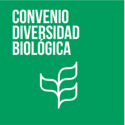
|
Convenio sobre la Diversidad Biológica
|

|
Convención de las Naciones Unidas de Lucha contra la Desertificación
|
| 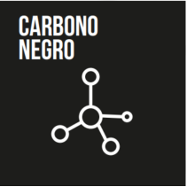
|
Acciones en carbono negro y contaminantes de vida corta
|
| 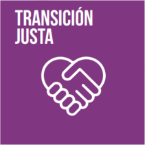
|
Acciones en apoyo de la transición justa
|

|
Soluciones basadas en naturaleza
|
| 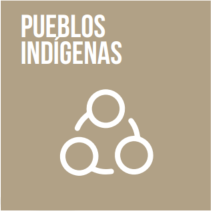
|
Aportes de los Pueblos Indígenas
y respeto por sus cosmovisiones y sus derechos
|

|
Aportes de las comunidades Afrodescendientes y respeto por sus cosmovisiones y sus derechos
|
III. Transición justa, justicia social y climática
En apego con nuestra cultura democrática, libre, independiente inclusiva, multiétnica y pluricultural y basada en una tradición de inclusión y absoluto respeto a los derechos humanos, Costa Rica reconoce que la transformación de su economía y sociedad son urgentes e impostergables y reafirma que nadie puede quedarse atrás por atender este sentido de urgencia. Hasta los procesos más rápidos deben tomar en consideración las necesidades y oportunidades de todas las personas, sin perder el sentido de urgencia que la situación exige. Por esto, una transición justa y una perspectiva de justicia social y climática son centrales para no ampliar las brechas sociales existentes, sino reducirlas.
Las oportunidades son enormes. Si están bien gestionadas, tal como señala la Organización Internacional del Trabajo, las transiciones hacia economías ambiental y socialmente sostenibles pueden constituir un importante motor para la creación de puestos de trabajo, la conservación y regeneración de nuestros ecosistemas, la mejora de la calidad del empleo, la justicia social y la erradicación de la pobreza.
Ante este potencial, Costa Rica entiende la transición justa como un proceso de toda la economía que produce los planes, políticas e inversiones que llevan a un futuro en el que todos los empleos son verdes y decentes, las emisiones netas son cero, la pobreza ha sido erradicada y las comunidades son prósperas y resilientes.
Costa Rica reconoce que las condiciones sociales, económicas e históricas de algunas poblaciones aumentan su vulnerabilidad ante los impactos del cambio climático. Entre los grupos más vulnerabilizados se encuentran las personas con discapacidad, las personas transgénero, las personas adultas mayores, las mujeres y la juventud y niñez, los Pueblos Indígenas y las comunidades Afrodescendientes.
Al mismo tiempo, los Pueblos Indígenas y las comunidades Afrodescendientes resguardan un conocimiento y tradiciones basadas en sus respectivas cosmovisiones y las relaciones con la naturaleza que estas conllevan que son invaluables, y que deben ser la base del abordaje de la acción climática con estas poblaciones.
Costa Rica ve la transición justa, centrada en la justicia social y climática como el mejor vehículo para construir una mejor Costa Rica, de manera que el país logre maximizar la descarbonización y aumentar la resiliencia al tiempo que se potencie la prosperidad. A través de las acciones detalladas en esta NDC, el país busca redoblar su esfuerzo por catalizar los cambios transformacionales necesarios para maximizar la creación de valor público colectivo, incorporando los aportes diferenciados que hacen a la economía sus cuatro ámbitos principales: el mercado, el estado, los bienes comunes y los hogares, y fortaleciendo las sinergias entre estos.
Además, esta NDC incorpora esfuerzos de seguimiento, análisis y prospectiva con el fin de contar con herramientas para evaluar y corregir la trayectoria conforme evolucionen las circunstancias y las opciones tecnológicas disponibles para buscar continuamente el camino de mayor bienestar hacia el cumplimiento de los objetivos.
Los elementos de transición justa están integrados de manera transversal a través de toda la NDC y señalados con un icono específico en la sección IV para visibilizar su relación con la agenda climática.
Adicionalmente, Costa Rica presenta las siguientes contribuciones principales en materia de transición justa:
1.
Al 2022 Costa Rica habrá oficializado su “Ciclo Nacional de Ambición” con el que establece oficialmente las bases de un proceso continuo, iterativo e inclusivo, que incorpore las diversas cosmovisiones y conocimientos y basado en la mejor ciencia disponible y que haga los esfuerzos necesarios para incorporar de manera apropiada a los grupos más vulnerabilizados ante el cambio climático, para el monitoreo y actualización de sus Contribuciones Nacionalmente Determinadas y su Estrategia a Largo Plazo bajo el Acuerdo de París. Este Ciclo ayudará a actualizar las metas de los diferentes instrumentos, buscando la mejor estrategia para mantener la trayectoria de emisiones hacia la meta de la Descarbonización del 2050 y el presupuesto de emisiones definido en esta NDC para el periodo 2021 y 2030, así como la definición de metas y presupuestos de emisiones para períodos futuros, manteniendo el enfoque de justicia climática y social y de transición justa y las consideraciones de bienestar de las personas y los ecosistemas.

2.
A 2022, Costa Rica habrá llevado a cabo un diagnóstico de empleos verdes y azules en Costa Rica, que analice el estado del empleo verde en el país, incluyendo la identificación de empleo verde y azul vinculado a las principales cadenas de valor existentes y potenciales.
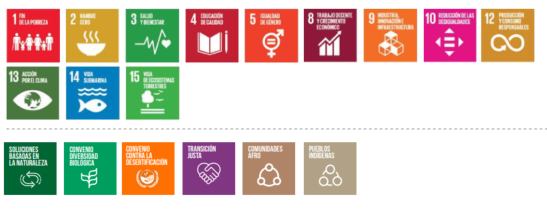
3.
Al 2022 Costa Rica habrá establecido un esquema de Gobernanza de Transición Justa liderado por el Ministerio de Ambiente y Energía (MINAE), el Ministerio de Desarrollo Humano e Inclusión Social (MDHS) y el Ministerio de Trabajo y Seguridad Social (MTSS) para los sectores contemplados en la NDC. Este esquema incluirá una comisión de trabajo entre los dos ministerios para lograr un entendimiento común de la transición justa y para coordinar acciones conjuntas, así como espacios de diálogo permanentes y ad hoc que permitan fomentar el diálogo social tripartito entre gobierno, representantes de empleadores y de trabajadores, así como un diálogo social amplio que integre a las mujeres y a las personas jóvenes desde una perspectiva interseccional, a los Pueblos Indígenas y a las comunidades Afrodescendientes de manera apropiada a las realidades y cosmovisiones de las distintas comunidades y territorios.

4.
Al 2024, Costa Rica habrá elaborado una Estrategia de Transición Justa para el país, acompañada de una Política Nacional de Empleos Verdes y de los mecanismos para darles seguimiento y evaluarlas, incluyendo el desarrollo y la implementación de las funciones necesarias en el Sistema Nacional de Métrica de Cambio Climático (SINAMECC) para estimar el empleo verde, la evolución de la transición justa y el impacto de la acción climática sobre el empleo y los grupos vulnerables, así como para prever y anticipar cambios en la demanda ocupacional causados por la misma.

IV. Principales áreas de acción
Costa Rica concibe la descarbonización y la resiliencia como medios para transformar su modelo de desarrollo a uno basado en la inclusión social, el bienestar de la ciudadanía, la economía circular, la bioeconomía, la economía creativa y cultural y el crecimiento verde.
La acción climática costarricense integra la descarbonización, la adaptación y la resiliencia de manera sectorial y territorial. Las principales políticas públicas en cada área de acción están conducidas a aportar tanto a la reducción de emisiones como a la disminución de la vulnerabilidad climática.
Las contribuciones que Costa Rica presenta en esta NDC siguen esta lógica de acción climáti- ca integral y por áreas temáticas prioritarias. A continuación, se presentan las contribuciones de Costa Rica en 13 áreas temáticas priorita- rias de su sociedad y economía.
1. Movilidad y transporte
Costa Rica está comprometida a desarrollar un sistema de movilidad basado en la movilidad activa y un sistema de transporte público seguro, eficiente, impulsado con energía renovable y accesible para todas las personas, incluyendo aquellas con discapacidades; con una flota de vehículos ligeros cero emisiones y un transporte de carga eficiente.
La contribución de Costa Rica en transporte representa una profunda transformación de un sistema centrado en vehículos particulares a uno centrado en el bienestar de las personas.
En el área temática de transporte, Costa Rica ofrece las siguientes contribuciones:
| CONTRIBUCIÓN
|
Impacto sobre el bienestar
|
1.1.
Durante el periodo de cumplimiento de esta NDC entrará en operación el Tren Eléctrico de Pasajeros en el Gran Área Metropolitana, impulsado por energía eléctrica renovable.
|
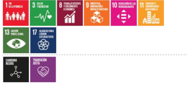
|
1.2.En el 2021 se renovarán las concesiones de autobuses públicos con criterios de descarbonización, incluyendo la sectorización, el pago electrónico y la integración multimodal de medios de transporte público y activo.
|
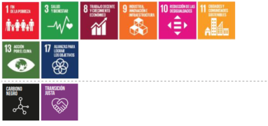
|
1.3.Durante el periodo de cumplimiento de esta NDC, el Tren Eléctrico Limonense de Carga (TELCA) estará en operación para el año 2022.
|

|
1.4.En el año 2030, al menos el 8% de la flota de transporte público del país será cero emisiones.
|
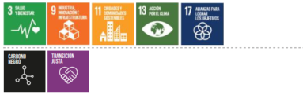
|
1.5.En el año 2030, se habrá ampliado y mejorado la infraestructura para aumentar en al menos un 5% los viajes en movilidad no motorizada (incluyendo movilidad peatonal y en bicicleta) con respecto a la trayectoria actual.
|

|
1.6.Para el año 2025, el país habrá adoptado estándares para migrar hacia una flota de motocicletas cero emisiones y la estabilización del crecimiento de flota de motocicletas.
|

|
1.7.En el año 2030, al menos el 8% de la flota de vehículos ligeros —privados e institucionales— será eléctrica.
|

|
1.8.En el año 2025 se habrá iniciado el establecimiento de modelos de logística sostenible en los principales puertos, zonas urbanas y centros de consolidación logística del país, en consonancia con el Plan Estratégico Nacional Costa Rica 2050.
|
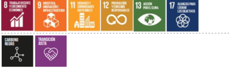
|
1.9.Al año 2030, el país habrá reducido significativamente su brecha digital y tecnológica, con particular énfasis en poblaciones social y económicamente vulnerables, mediante un modelo solidario, contemplando aspectos como conectividad a Internet, equipamiento y apropiación digital.
Esto será un habilitador para cerrar las brechas sociales y económicas mediante prácticas digitales como teletrabajo, comercio electrónico y turismo virtual (que reducen la necesidad de desplazamientos), aumentando la eficiencia y el dinamismo económico nacional.
|
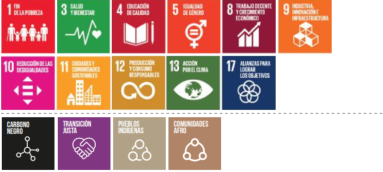
|
2. Desarrollo y ordenamiento territorial
Costa Rica se compromete a impulsar un ordenamiento espacial del territorio que contribuya decididamente a reducir el riesgo climático en las diferentes regiones del país, comprendiendo que los diversos territorios presentan condiciones disímiles entre sí, y que además contribuya a catalizar un desarrollo territorial basado en la descarbonización.
La contribución del país en desarrollo y ordenamiento territorial se basa en fomentar criterios de adaptación y descarbonización en los diferentes instrumentos que regulan la planificación de los territorios, lo que resulta clave para reducir vulnerabilidades y exposición tanto de personas como de sistemas productivos ante eventos climáticos actuales y futuros, y para impulsar un desarrollo bajo en emisiones.
En el área temática de desarrollo y ordenamiento territorial, Costa Rica ofrece las siguientes contribuciones:
| CONTRIBUCIÓN
|
Impacto sobre el bienestar
|
2.1.Al 2030, se habrán incorporado criterios de adaptación en distintos instrumentos de planificación territorial, entre estos los planes regionales de desarrollo, los planes reguladores cantonales y costeros, los planes maestros y los planes generales de manejo de áreas silvestres protegidas y de corredores biológicos, entre otros, con apego a las normas establecidas y las competencias institucionales.
|
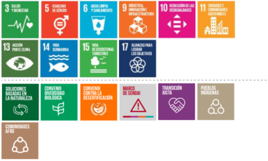
|
2.2.Al 2030, se habrán incorporado criterios de desarrollo orientado al transporte en distintos instrumentos de planificación territorial, entre estos el Plan Nacional de Desarrollo Urbano, los planes regionales de desarrollo y los planes reguladores cantonales y costeros; estos se implementan de manera que articulen los modos de movilidad sostenible con el modelo de ciudades compactas.
|
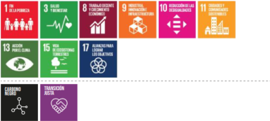
|
3. Energía
Costa Rica está comprometida a aprovechar sus acciones tempranas y pioneras en generación eléctrica renovable para consolidar su sistema eléctrico con la capacidad flexibilidad, inteligencia, y resiliencia necesaria para abastecer y gestionar energía renovable a costo competitivo.
La contribución de Costa Rica en energía está centrada en acelerar la electrificación de diferentes usos en el país, limitar y reducir la utilización de combustibles fósiles, promover la eficiencia energética e innovar en fuentes de energía.
En el área temática de energía, Costa Rica ofrece las siguientes contribuciones:
| CONTRIBUCIÓN
|
Impacto sobre el bienestar
|
3.1.La meta aspiracional de esta contribución es alcanzar y mantener una generación eléctrica 100% renovable al 2030. El país mantendrá la capacidad térmica necesaria para asegurar la confiabilidad del sistema, procurando eliminarla en cuanto existan otras alternativas técnica y económicamente viables.
|
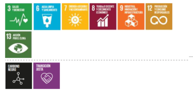
|
3.2.Costa Rica se compromete a desarrollar, durante el período de implementación de esta contribución, una planificación integrada intersectorial del proceso de electrificación de la demanda energética, que incorporará las necesidades de los diversos sectores y la diversidad de fuentes renovables de energía disponibles en las diferentes regiones del país.
|

|
3.3.Para el año 2030 Costa Rica habrá desarrollado y/o actualizado los estándares y regulaciones de eficiencia energética de las tecnologías de uso final (incluyendo, pero no limitada a, equipos de refrigeración y aire acondicionado, calderas, bombas de calor, vehículos, maquinaria y otros equipos de alto consumo energético) para asegurar su consistencia con la trayectoria de descarbonización del país para ser emisiones netas cero al 2050.
|

|
3.4.Para el año 2030, las medidas de sustitución tecnológica y de eficiencia energética en los sectores de transporte de pasajeros, de carga e industrial reducirán las emisiones de carbono negro un 20% con respecto a las emisiones del 2018.
|

|
3.5.Para el año 2022 Costa Rica habrá desarrollado una estrategia para el desarrollo y promoción del hidrógeno verde en el país.
|
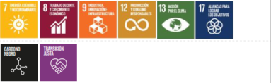
|
3.6.Durante el período de implementación de esta contribución, Costa Rica impulsará que se eleve a rango de ley la moratoria de exploración y explotación de hidrocarburos en el territorio nacional.
|
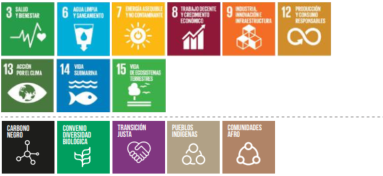
|
4. Infraestructura y construcción
Costa Rica está comprometida con transformar su sistema de infraestructura hacia uno resiliente, sostenible con estándares de alta eficiencia y procesos bajos en emisiones, que incorpore soluciones basadas en la naturaleza y privilegie la economía circular.
La contribución de Costa Rica en el área temática de infraestructura está centrada en la evaluación del riesgo y la incorporación de la adaptación en todas las etapas del ciclo de vida de proyectos, de manera que la protección de la infraestructura y la continuidad de los servicios contribuyan a la resiliencia de las poblaciones y comunidades, y en la adopción de materiales y prácticas bajas en emisiones y sostenibles.
En el área temática de infraestructura y construcción, Costa Rica ofrece las siguientes contribuciones:
| CONTRIBUCIÓN
|
Impacto sobre el bienestar
|
4.1.El país incrementará el uso en edificaciones de madera, bambú y otros materiales locales, incluyendo aquellos de plantaciones de bosques manejados sosteniblemente, hasta aumentar un mínimo de 10% en 2025 sobre la línea base del 2018. En este esfuerzo favorecerá el conocimiento y los oficios tradicionales. sobre estos materiales a través de su transferencia generacional, reconocimiento y diálogo con saberes afines.
|
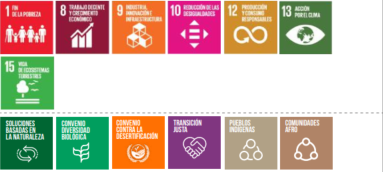
|
4.2.En el año 2030, el 100% de nuevas edificaciones se diseñarán y construirán adoptando sistemas y tecnologías de bajas emisiones y resiliencia bajo parámetros bioclimáticos.
|

|
4.3.Durante el período de implementación de esta contribución, el país incorporará criterios de adaptación al cambio climático en normas y lineamientos para la inversión pública, de manera que se asegure su robustez ante impactos climáticos.
|

|
4.4.Al 2030, se habrán desarrollado aplicaciones de lineamientos con criterios de adaptación, esfuerzos de articulación institucional y mejoras en la capacidad de respuesta, entre otros, que permitan garantizar la protección de la infraestructura y la continuidad de los servicios públicos vitales (salud, educación, agua y saneamiento, energía, transporte) ante eventos hidrometeorológicos extremos.
|
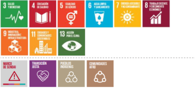
|
5. Industria, comercio y servicios
Costa Rica se compromete a apoyar la evolución de los modelos económicos de sus sectores productivos a modelos más eficientes, bajos o cero emisiones, circulares, resilientes y sostenibles.
El compromiso de Costa Rica para el área temática industrial está centrado en su transformación mediante procesos y tecnologías eficientes y sostenibles que utilicen energía de fuentes renovables u otras fuentes cero emisiones.
En el área temática de industria, comercio y servicios, Costa Rica ofrece las siguientes contribuciones:
| CONTRIBUCIÓN
|
Impacto sobre el bienestar
|
5.1.En el año 2030, el área temática de industria, comercio y servicios contará con modelos innovadores productivos de “cuna a cuna” o con un enfoque de economía circular en las principales cadenas productivas de la agro-industria, servicios, construcción y economía creativa y cultural, entre otros.
|
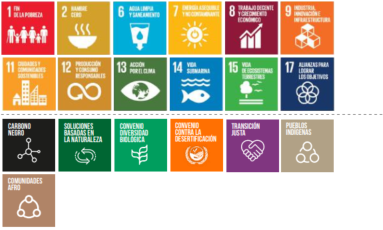
|
5.2.Durante el período de implementación de esta contribución, Costa Rica creará y habrá comenzado la implementación de objetivos y metas basados en ciencia y alineados a las Contribuciones Nacionalmente Determinadas y al Plan Nacional de Descarbonización para las actividades productivas de los sectores de industria, comercio y servicios que generan mayor impacto en emisiones de gases de efecto invernadero.
|

|
5.3.Al 2030, se reportarán las acciones y resultados concretos en mitigación y adaptación al cambio climático de empresas y cadenas de valor de los productos que más impacto generan en emisiones de gases de efecto invernadero, por medio del Programa País de Carbono Neutralidad y el Sistema Nacional de Métrica de Cambio Climático.
|

|
5.4.Costa Rica confirma los compromisos establecidos en la Enmienda de Kigali del Protocolo de Montreal para reducir progresivamente los hidrofluorocarbonos (HFC) y promover los refrigerantes de bajo poder de calentamiento global.
|

|
5.5.Al 2030, se habrán generado las condiciones necesarias para promover la innovación, inversión, eco competitividad y resiliencia de la economía ante los efectos adversos producidos por el cambio climático.
|
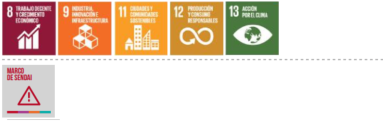
|
6. Gestión integrada de residuos
Costa Rica se compromete a desarrollar un sistema de gestión integral de residuos basado en evitar, reducir, reutilizar, valorizar, tratar y disponer de estos adecuadamente con la máxima eficiencia y bajas emisiones de gases de efecto invernadero.
La contribución de Costa Rica en el área temática de residuos está centrada en la gestión integral de residuos, en particular los orgánicos, y en la modernización de su sistema de alcantarillado y tratamiento de aguas residuales, en particular en áreas urbanas.
En el área temática de gestión integrada de residuos, Costa Rica ofrece las siguientes contribuciones:
| CONTRIBUCIÓN
|
Impacto sobre el bienestar
|
6.1.En el año 2025, al menos 10 municipalidades implementan el Plan Nacional de Compostaje.
|
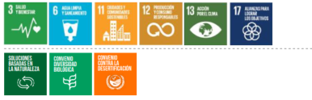
|
6.2.Al 2030, se alcanzará al menos el 50% de cobertura de alcantarillado sanitario en las áreas de alta densidad poblacional, incorporando criterios de resiliencia al cambio climático.
|

|
6.3.En el año 2030, al menos el 50% de las aguas residuales en las áreas de alta densidad poblacional recibirán tratamiento.
|
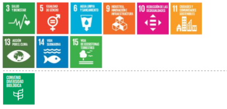
|
6.4.En los primeros dos años del período de implementación de esta NDC, Costa Rica lanzará su instrumento de política pública para la promoción de la economía circular.
|
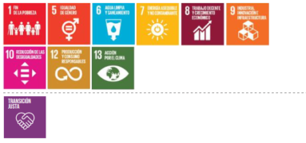
|
6.5.Durante los primeros dos años de implementación de esta NDC, Costa Rica habrá publicado e iniciado implementación de sus instrumentos de política pública, como el Plan de Acción para la Gestión Integral de Residuos Sólidos 2021-2026 y el Plan Nacional de Compostaje 2020- 2050, articulando los esfuerzos de reducción de emisiones, con un enfoque de transformación al hacia la economía circular y la bioeconomía.
|
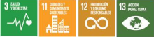
|
7. Agropecuario
Costa Rica se compromete a desarrollar sistemas agroalimentarios altamente eficientes que generen bienes de exportación y consumo local bajos en carbono y a consolidar un modelo ganadero basado en la eficiencia productiva y disminución de gases de efecto invernadero.
La contribución de Costa Rica en el área temática agropecuaria está centrada en la transformación del sector productivo, mediante la adopción de tecnologías de reducción de emisiones y de políticas y prácticas adaptativas.
En el área temática agropecuaria, Costa Rica ofrece las siguientes contribuciones:
| CONTRIBUCIÓN
|
Impacto sobre el bienestar
|
7.1.En el año 2030, las cadenas de valor de café, ganadería, caña de azúcar, arroz y musáceas aplicarán sistemas productivos bajos en emisiones de GEI y que incorporan medidas de adaptación y resiliencia tanto a nivel de finca como a nivel de etapa de procesamiento.
|

|
7.2.En el año 2025, el país impulsará un sistema de economía circular de las fincas agropecuarios considerando integralmente el proceso de biodigestión y la recarbonización del suelo a través del uso de tecnologías para aumentar los niveles de carbono orgánico en suelo (COS), entre otros.
|
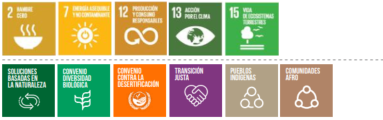
|
7.3.
En el año 2030, el 70% del hato ganadero y 60% del área dedicada a la ganadería implementarán sistemas productivos bajos en emisiones y que incorporan medidas de adaptación y resiliencia.
|
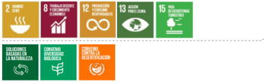
|
7.4.Al 2026, se habrá desarrollado un estudio sobre impactos derivados del cambio climático en sistemas productivos agropecuarios y pesqueros, incluyendo afectaciones en sanidad agropecuaria, y cuyos resultados son compartidos de manera apropiada a las realidades y cosmovisiones de las distintas comunidades.
|

|
7.5.Al 2024, el sector agropecuario contará con su propio plan sectorial de adaptación al cambio climático en implementación.
|
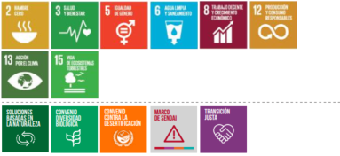
|
7.6.
Al 2030, se mantendrá una reducción del área total de pastos a una tasa anual del 1% y un aumento del área de pastos con buen manejo a una tasa de 1 a 2% anual sobre la tendencia en la línea base.
|

|
7.7.Al 2030, se habrán incorporado prácticas adaptativas y resilientes en sistemas de producción agropecuaria, mediante lineamientos técnicos de resiliencia, certificación y capacitación de manera apropiada a las realidades y cosmovisiones de las distintas comunidades.
|
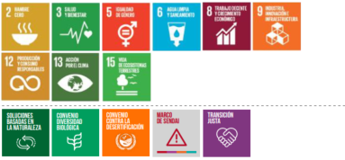
|
7.8.Al 2022 se habrán desarrollado las “Guías Alimentarias Adaptadas” en dos territorios del país con mapas e información que promueva el consumo de productos agrícolas y alimenticios autóctonos y tradicionales de temporada, resaltando su valor nutricional, su aporte a la protección del patrimonio cultural, a la reducción de emisiones y a la seguridad alimentaria.
|
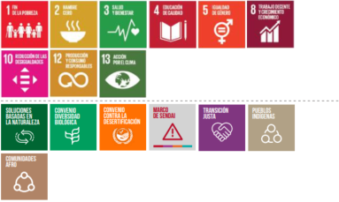
|
8. Bosques y biodiversidad terrestre
Costa Rica se compromete a gestionar el territorio rural, urbano y costero orientado a la conservación y el uso sostenible de los recursos forestales, y aumentando y manteniendo los servicios ecosistémicos (incluyendo los servicios de abastecimiento de recursos, servicios de regulación, servicios culturales y servicios de apoyo) a partir de soluciones basadas en la naturaleza.
La contribución de Costa Rica en el área temática de bosques y biodiversidad terrestre está centrada en sostener y aumentar su cobertura forestal, implementar medidas adaptativas dentro y fuera de áreas protegidas y fortalecer los incentivos, incluyendo la transición de su Programa de Pago por Servicios Ambientales a uno de Pago por Servicios Ecosistémicos que reconozca de manera más integral el aporte de los ecosistemas y reconozca el empoderamiento, la generación de capacidades y la responsabilidad proactiva de personas, sectores y grupos poblacionales.
En el área temática de bosques y biodiversidad terrestre, Costa Rica ofrece las siguientes contribuciones:
| CONTRIBUCIÓN
|
Impacto sobre el bienestar
|
8.1.Durante el período de implementación de esta contribución, Costa Rica se compromete a potenciar las soluciones basadas en la naturaleza como un pilar central de su acción climática y a incluirlas en sus políticas públicas relacionadas con el cambio climático.
|

|
8.2.Al año 2030, Costa Rica habrá gestionado acciones, incluyendo el fortalecimiento del sistema cultural indígena de conservación, que le permitan mantener o aumentar la capacidad de captura y/o reducción de emisiones provenientes de los ecosistemas terrestres como los ecosistemas forestales, agroforestales y las turberas, entre otros.
|

|
8.3.
Al año 2030, Costa Rica habrá mantenido y mejorado el programa de Pago por Servicios Ecosistémicos incluyendo otros servicios y ecosistemas no cubiertos hasta ahora incluyendo de manera prioritaria los suelos, turberas y demás ecosistemas con alto potencial de secuestro de carbono, identificando y aumentando las fuentes de financiamiento.
|
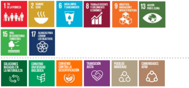
|
8.4.En el año 2030, el país aumentará y mantendrá su cobertura boscosa al 60%, al tiempo que este tipo de cobertura no compite con el sector agropecuario.
|

|
8.5.
En el año 2030, el país mantendrá una tasa de deforestación cero en bosque maduro.
|

|
8.6.
Al 2030, se habrá fomentado la adaptación basada en ecosistemas dentro y fuera del Patrimonio Natural del Estado por medio de la conservación de biodiversidad en corredores biológicos, reservas privadas, territorios indígenas, fincas agropecuarias, y de la gestión integral de patrimonio natural y cultural, entre otros.
|
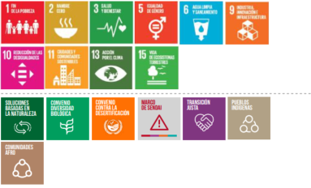
|
|
8.7.Al 2030, se incrementará en 69,500 hectáreas la aplicación de sistemas silvopastoriles y agroforestales completos.
|

|
8.8.Al 2030, se habrán intervenido 1,000,000 hectáreas de cobertura boscosa, incluyendo bosque de crecimiento secundario, para evitar degradación de la tierra y favorecer la biodiversidad.
|

|
8.9.Al 2030, Costa Rica ejecuta los Planes Ambientales Forestales Territoriales estarán en ejecución, de manera conjunta con los territorios indígenas, como instrumento de implementación de las medidas establecidas en la Estrategia Nacional REDD+; estos planes serán construidos mediante el proceso de consulta conforme al marco establecido para tal fin en la legislación nacional e internacional.
|

|
9. Océano y recurso hídrico
Costa Rica se compromete a contar con ecosistemas marinos y costeros sanos, adaptados y resilientes, que permitan una utilización sostenible de los recursos naturales y cuyo manejo esté centrado en el bienestar de las personas y de la naturaleza. Además, se compromete a hacer más resilientes los sistemas de utilización de recurso hídrico tanto en términos de cuidar las fuentes de agua superficial y subterránea como de recuperación, tratamiento y almacenamiento de la lluvia, incluyendo por medio de técnicas de cosecha de agua.
La contribución de Costa Rica está centrada en la protección y conservación de los océanos y las zonas costeras, reconociendo su valor en mitigación, sus aportes en adaptación al cambio climático y el papel fundamental que juegan en la vida y el bienestar de muchas personas y comunidades en el país.
En el área temática de océanos, recurso hídrico y biodiversidad azul, Costa Rica ofrece las siguientes contribuciones:
| CONTRIBUCIÓN
|
Impacto sobre el bienestar
|
9.1.
Al 2022, el 30% de nuestro océano se encontrará bajo algún esquema oficial de protección.
|

|
9.2.
Al 2030, se habrá fomentado la seguridad y sostenibilidad hídrica ante el cambio climático, así como el adecuado e integrado manejo de cuencas hidrográficas, por medio de la protección y el monitoreo de fuentes considerando tanto aguas superficiales como subterráneas.
|
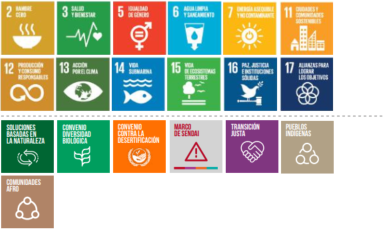
|
9.3.
Como ambición general de su meta de carbono azul, Costa Rica seguirá liderando en la conservación, el uso responsable y la restauración de humedales costeros a través de la profundización del conocimiento científico de los servicios ecosistémicos que estos hábitats proveen y tomará pasos para proteger mejor y restaurar estos espacios en el futuro.
|

|
9.4.Durante el período de implementación de esta contribución, Costa Rica se compromete a una protección y conservación mejorada de los ecosistemas de carbono azul existentes.
|
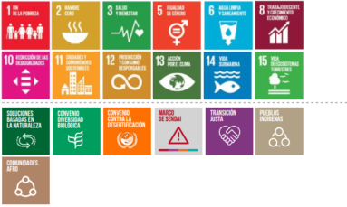
|
9.5.
El país protegerá y conservará el 100% de los humedales costeros incluidos y reportados en el Inventario Nacional de Humedales (en el período 2016-2018) para el año 2025 y aumentará el área de humedales estuarinos registrados en al menos 10% para el año 2030, para así proteger y conservar estos ecosistemas.
|
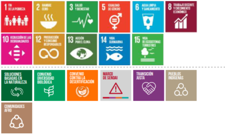
|
9.6.
Costa Rica se asegurará que las áreas de humedales costeros estén manejadas y monitoreadas de manera efectiva, y continuará desarrollando mecanismos para continuar el aprovechamiento comunitario sostenible de áreas de manglares clave para el sustento y sostenimiento local.
|
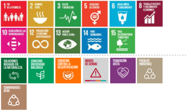
|
|
9.7.
Costa Rica aspira a detener o revertir la pérdida neta de humedales costeros para el 2030, mediante la atención a los principales causantes de la deforestación y la degradación que amenaza la propia existencia, salud y vitalidad de los humedales costeros, según el Inventario Nacional Forestal.
|

|
9.8.
Para el 2025 y en el marco de la restauración de ecosistemas de carbono azul, Costa Rica se compromete a restaurar las áreas de humedales costeros priorizadas, según están identificadas en el plan de implementación de la Estrategia Nacional de Restauración del Paisaje, con un porcentaje adicional de área establecido por la estrategia para el 2030.
|
|
9.9.
En el marco de la restauración de ecosistemas de carbono azul, Costa Rica se compromete a garantizar que estas las áreas de humedales costeros priorizadas se gestionen y supervisen de forma eficaz, incluso mediante la integración con los planes de gestión existentes. Costa Rica seguirá desarrollando mecanismos para permitir la gestión comunitaria sostenible de las áreas de manglares clave para el sustento y los medios de vida locales.
|

|
9.10.
Costa Rica se compromete a explorar mecanismos innovadores de financiamiento de la conservación, incluida la expansión potencial de los modelos terrestres de Pago por Servicios de los Ecosistemas, sujeto a mejoras, para apoyar la implementación de los objetivos de carbono azul.
|

|
9.11.Costa Rica explorará el potencial de las inversiones público-privadas para apoyar la protección y restauración de los manglares.
|

|
9.12.
Costa Rica se compromete a promover actividades de pesca sostenible, incluidos esquemas de maricultura, de valor agregado de la pesca artesanal y tradicional y de ordenamiento espacial marino para impulsar el desarrollo de una economía azul.
|
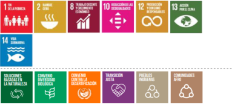
|
10. Acción para el empoderamiento climático
Costa Rica se compromete a promover el empoderamiento de la sociedad civil, sector público, privado y academia en materia de cambio climático para que se apropien de la acción climática y puedan liderar desde sus espacios de acción. Asimismo, el país se compromete a abordar la acción para el empoderamiento climático desde un enfoque multidimensional, intercultural y de derechos humanos, acorde con las cosmovisiones y las tradiciones de las distintas poblaciones y las realidades geográficas y socioculturales de sus territorios.
La contribución de Costa Rica en el área temática de acción para el empoderamiento climático está centrada en la creación de mecanismos oficiales y dedicados y el fortalecimiento de espacios existentes como el Consejo Consultivo Ciudadano de Cambio Climático (5C).
En el área temática de acción para el empoderamiento climático, Costa Rica ofrece las siguientes contribuciones:
| CONTRIBUCIÓN
|
Impacto sobre el bienestar
|
10.1.
En los primeros dos años del período de implementación de esta contribución estará en operación una estrategia nacional para el empoderamiento climático con acciones en educación, formación, sensibilización social, acceso a la información, participación ciudadana y cooperación internacional. Esta estrategia será creada de manera inclusiva y participativa, incluyendo con los sectores de Cultura y Educación, y seguirá las mejores prácticas internacionales para su creación, incluyendo aquellas de la Convención Marco de las Naciones Unidas sobre el Cambio Climático y la Organización de las Naciones Unidas para la Educación, la Ciencia y la Cultura (UNESCO). Esta estrategia tendrá indicadores y métricas específicas, planteará propuestas de financiamiento, incluirá de manera central a las personas jóvenes, al Consejo Consultivo Ciudadano de Cambio Climático, a los Pueblos Indígenas y a las comunidades Afrodescendientes, cuyas cosmovisiones, tradiciones y conocimientos son invaluables para informar un desarrollo nacional verdaderamente sostenible.
|
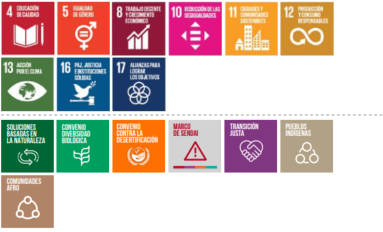
|
10.2.
Durante el período de implementación de esta contribución, el país revisará los currículos de educación en primer y segundo ciclo educativo para incluir o ampliar materia sobre cambio climático, la transición justa, y el empleo verde, creará alianzas entre actores clave del sector educación formal y no formal —entre ellos el Ministerio de Educación Pública, organizaciones de sociedad civil y organizaciones comunales que tengan la capacidad de implementar programas de educación dirigidos a la ciudadanía en general— y creará un proceso con universidades públicas y privadas para incluir en sus programas o fortalecer contenidos relacionados con el cambio climático y la formación de competencias para el empleo verde con base en las exigencias profesionales previstas. Estos procesos se llevaran a cabo tomando en cuenta las perspectivas de distintos grupos, entre ellos, las personas jóvenes, los Pueblos Indígenas y personas Afrodescendientes de manera apropiada a las realidades y cosmovisiones de las distintas comunidades.
|

|
10.3.
Durante el período de implementación de esta contribución, el país desarrollará programas de capacitación específicos para mujeres, personas jóvenes, personas Afrodescendientes, personas indígenas y otros grupos históricamente excluidos del sector laboral, a fin de facilitar el acceso a empleos verdes, incluyendo áreas como la de la energía renovable, la agricultura regenerativa y de precisión, la construcción sostenible y la recuperación de valorizables, en las que a menudo están subrepresentados.
|
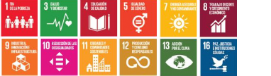
|
10.4.Durante el período de implementación de esta contribución, el país habrá implementado acciones de comunicación, participación y empoderamiento de la ciudadanía para promover la integración de las perspectivas de distintos grupos, entre ellos, las personas jóvenes, los Pueblos Indígenas y personas Afrodescendientes de manera apropiada a las realidades y cosmovisiones de las distintas comunidades.
|

|
10.5.Al 2030, se han fortalecido las capacidades en mitigación y adaptación al cambio climático de tomadores de decisión de los diferentes niveles de gobierno, así como de líderes comunales y de las personas jóvenes de manera apropiada a las realidades y cosmovisiones de las distintas comunidades.
|
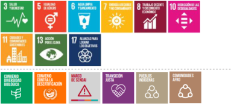
|
10.6.Al 2030, se habrán incorporado acciones de sensibilización y creación de capacidades para personas tomadoras de decisiones con un énfasis en el modelo de innovación de triple hélice para promover el desarrollo económico y social a través de la interacción del sector empresarial, el sector público, la academia para el desarrollo de una economía inclusiva, descarbonizada y resiliente.
|

|
|
10.7.
Al 2030, se habrá impulsado la gestión y participación comunitaria en la adaptación para reducir la vulnerabilidad de las comunidades al cambio climático de manera apropiada a las realidades y cosmovisiones de las distintas comunidades.
|

|
10.8.Durante el período de implementación de esta contribución, el país tomará acciones de comunicación y participación ciudadana alineadas a la Estrategia Nacional de Consumo y Producción Responsable para reducir el consumismo, específicamente de productos de consumo individual con huella de carbono alta. En este esfuerzo favorecerá el conocimiento y los oficios tradicionales a través de su transferencia generacional, reconocimiento y diálogo con saberes afines.
|

|
10.9.
A partir del 2021, el país desarrollará espacios de diálogo y participación, tanto virtuales como presenciales para grupos particularmente vulnerabilizados ante el cambio climático, incluyendo a la comunidad Afrodescendiente, grupos organizados de mujeres, juventudes, comunidad transexual, Pueblos Indígenas, personas con discapacidad y personas adultas mayores de manera apropiada y accesible a las realidades, cosmovisiones y tradiciones de las distintas comunidades y poblaciones.
|

|
10.10.
Al 2022, el país ha generado un Plan para la Integración de las Juventudes en la Acción Climática.
|
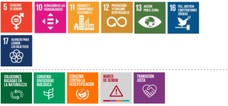
|
10.11.Al 2024 se fortalecerán las estructuras para la incorporación de las juventudes y la niñez dentro de las acciones para el empoderamiento climático, incluyendo el establecimiento de un Foro Anual para Juventudes en Acción Climática como parte del eje de acción climática de la Política Pública de la Persona Joven 2020-2024.
|
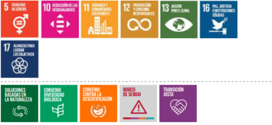
|
11. Transparencia y mejora continua
Costa Rica se compromete a asegurar la transparencia y apertura de información clave relacionada con los impactos del cambio climático y de los avances en acción climática, integrando diversos sectores en la acción climática, robusteciendo la planificación y la toma de decisiones basadas en datos.
La contribución de Costa Rica está centrada en la articulación, apertura y mejora de datos climáticos que integren a las poblaciones más vulnerables, hilvanando análisis cuantitativos y cualitativos para la toma de decisiones basadas en datos.
En el área temática de transparencia y mejora continua, Costa Rica ofrece las siguientes contribuciones:
| CONTRIBUCIÓN
|
Impacto sobre el bienestar
|
11.1.
Al 2022 Costa Rica ha implementado el sistema de monitoreo para el seguimiento de los avances de la NDC, de la Política Nacional de Adaptación al Cambio Climático, la Comunicación sobre la Adaptación, el Plan Nacional de Adaptación y el Plan Nacional de Descarbonización, permitiendo el acceso a los datos de manera abierta y apropiada para las distintas comunidades y poblaciones.
|
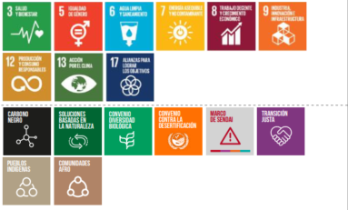
|
11.2.Al 2022 Costa Rica habrá establecido procesos y arreglos institucionales que le permitan contar con una capacidad permanente de análisis, prospectiva y publicación técnica independiente en acción climática. El país hará esfuerzos específicos para hacer esta información disponible de manera apropiada a las diferentes comunidades y poblaciones.
|
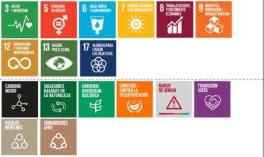
|
11.3.Para el año 2030, el país dará seguimiento a los indicadores requeridos para garantizar la igualdad de género y el empoderamiento de la comunidad Afrodescendiente, los grupos organizados de mujeres, las juventudes, la comunidad transexual, los Pueblos Indígenas, las personas con discapacidad y las personas adultas mayores en la agenda climática en los sectores de acción.
|
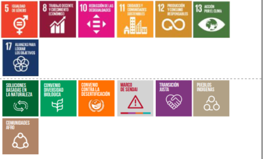
|
11.4.Para el año 2030 el país contará con datos diferenciados sobre la realidad de los grupos históricamente excluidos y más vulnerabilizados ante los efectos del cambio climático incluyendo como mínimo a la comunidad Afrodescendiente, grupos organizados de mujeres, juventudes, comunidad transexual, Pueblos Indígenas, personas con discapacidad y personas adultas mayores.
|

|
11.5.Al 2030, se han habilitado plataformas que faciliten acceso a información y servicios climáticos a todo tipo de público utilizando lenguaje y ejemplos relevantes y apropiados para las diferentes realidades y cosmovisiones del país.
|

|
11.6.Como acción de apoyo transversal, Costa Rica dar cuenta de los flujos (emisiones y absorciones) de gases de efecto invernadero de los humedales costeros mediante la integración en el Inventario Nacional de Gases de Efecto Invernadero y la armonización con otros sistemas de Medición, Reporte y Verificación como REDD+, utilizando las guías de buenas prácticas de gases de efecto invernadero del IPCC más robusto al menos en el 2024, cuando presente el primer Informe Bienal de Transparencia, dadas las circunstancias especiales para los países en desarrollo otorgadas en virtud del Artículo 13 del Acuerdo de París para 2030.
|

|
|
11.7.Al 2030, el país, con el apoyo del Consejo Científico de Cambio Climático (4C) habrá implementado políticas para promover la investigación científica, la recolección sistemática de datos, y el análisis actual y prospectivo de información sobre riesgos, impactos, pérdidas y daños por amenazas hidrometeorológicas.
|
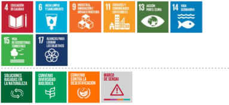
|
11.8.Al 2030, el país contará con una política de datos climáticos abiertos, tanto del sector público como privado, que facilite su generación, acceso por todo tipo de público utilizando lenguaje y ejemplos relevantes y apropiados para las diferentes realidades y cosmovisiones del país, y uso para la toma de decisiones de todos los sectores.
|
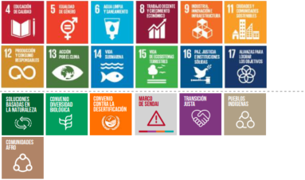
|
11.9.Al 2030, se habrá fortalecido el conocimiento, monitoreo y respuesta de los servicios de vigilancia sanitaria en salud pública.
|
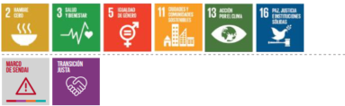
|
11.10.Al 2030, se habrá consolidado el Sistema Nacional de Monitoreo Forestal, incluyendo la plataforma del Sistema Nacional de Monitoreo de Cobertura y Uso de la Tierra y Ecosistemas (SIMOCUTE) y su vínculo con el Sistema Nacional de Métrica de Cambio Climático (SINAMECC) y otros sistemas nacionales de reporte ambiental y sus salvaguardas.
|

|
12. Finanzas
Costa Rica está comprometida con apoyar al sector financiero a reconocer y asimilar las implicaciones, tanto las oportunidades como los riesgos, de los impactos del cambio climático y de la transformación social y económica necesaria para hacerle frente. De esta manera, el país busca contar con un sector financiero y un sistema financiero descarbonizados y resilientes en sí mismos, y no que solo incorporen criterios de cambio climático en sus operaciones y productos existentes. De esta manera busca incentivar la inversión extranjera y el financiamiento en la generación de negocios verdes, impulsando la creación de negocios verdes y fortaleciendo las relaciones de intercambio de productos verdes nacionales en el exterior.
La contribución de Costa Rica está centrada en desarrollar un sector financiero que esté en capacidad de reconocer y gestionar los riesgos asociados al cambio climático y a las acciones para enfrentarla a la vez que toma un papel activo en apoyar la acción climática a lo largo de la economía.
En el área temática de finanzas, Costa Rica ofrece las siguientes contribuciones:
| CONTRIBUCIÓN
|
Impacto sobre el bienestar
|
12.1.Al 2030 Costa Rica habrá implementado al menos un instrumento de reforma fiscal verde consistente con la trayectoria necesaria para la descarbonización.
|
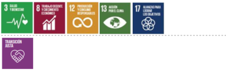
|
12.2.
Al 2025 el país habrá desarrollado las herramientas, instrumentos, reglamentos e incentivos para acompañar al sector financiero en el análisis, revelación y gestión de los riesgos e impactos del cambio climático en su sector.
|

|
12.3.
Movilizar el sistema financiero, incluyendo el Sistema de Banca para Desarrollo para que al 2030 existan en el mercado productos financieros en apoyo de la descarbonización y resiliencia.
|
|
12.4.Costa Rica se compromete con fortalecer instrumentos financieros tales como pago de servicios ecosistémicos, cánones y otros instrumentos de precio al carbono, así como seguros e instrumentos tarifarios y fiscales, para financiar las necesidades de adaptación y mitigación.
|

|
12.5.Costa Rica se compromete a identificar acciones climáticas en los ejercicios presupuestarios anuales, con el fin de contar con medidas de protección financiera ante impactos de la variabilidad y cambio climático.
|

|
12.6.
Para el 2022 Costa Rica publicará el primer Análisis de inversión del Plan Nacional de Descarbonización y del Plan de Adaptación (aún a ser presentado), que serán actualizados cada 5 años.
|
|
|
12.7.
Al 2024 se han incorporado criterios de infraestructura sostenible, descarbonizada, resiliente y que promueva la creación de empleos verdes para priorización de la inversión pública, en consonancia con el Plan Estratégico Nacional 2050.
|
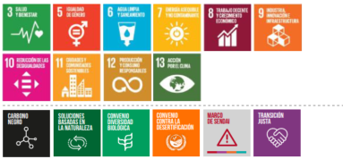
|
12.8.Durante el periodo de ejecución de esta NDC, Costa Rica habrá desarrollado un instrumento de apoyo financiero con el sistema bancario nacional para impulsar la transición energética.
|
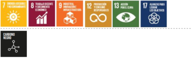
|
12.9.Al 2024 se habrá lanzado el Mecanismo de Compensación de Costa Rica (MCCR) como sucesor del Mercado Doméstico de Carbono, con el objetivo de apoyar y facilitar la movilización de fondos, principalmente nacionales, en procura de la descarbonización del país mediante la generación de Unidades Costarricenses de Compensación generados por Proyectos, Programas de Actividades o Actividades incorporadas a un Programa, que reduce o secuestra emisiones de gases de efecto invernadero en el territorio nacional.
|

|
13. Políticas, estrategias y planes de cambio climático
Costa Rica está comprometida con abordar la acción climática de manera integral y con un abordaje de modelo de desarrollo que mejore el bienestar de las personas y comunidades a largo y ancho del territorio.
La contribución de Costa Rica está centrada en desarrollar e implementar los instrumentos de política necesarios para cerrar las brechas socioeconómicas y territoriales a la vez que reduce las emisiones de GEI y aumenta la resiliencia.
En el área temática de políticas, estrategias y planes de cambio climático, Costa Rica ofrece las siguientes contribuciones:
| CONTRIBUCIÓN
|
Impacto sobre el bienestar
|
13.1.En el año 2021 Costa Rica publicará la Estrategia Económica Territorial Costa Rica: hacia una economía inclusiva y descarbonizada 2020-2050 y el Plan Estratégico Nacional 2050 como instrumentos de planificación a largo plazo orientado a lograr un desarrollo económico inclusivo y descarbonizado.
|
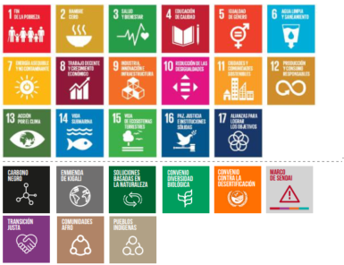
|
13.2.
El país se compromete a hacer las gestiones necesarias durante el periodo de implementación de esta NDC para buscar la ratificación del Acuerdo Regional sobre el Acceso a la Información, la Participación Pública y el Acceso a la Justicia en Asuntos Ambientales en América Latina y el Caribe (Acuerdo de Escazú) y las formas de implementación con normativa a nivel nacional.
|

|
13.3.
Al 2030, el Programa Pago por Servicios Ecosistémicos, y otros instrumentos de precio al carbono e instrumentos fiscales y tarifarios, habrán desarrollado nuevos mecanismos de financiamiento para la adaptación y mitigación al cambio climático en consonancia con la Estrategia Nacional REDD+.
|
|
13.4.
Al 2022 se habrán establecido los lineamientos y se pondrá en operación el Fondo Inclusivo de Desarrollo Sostenible con un capital semilla de 1,2 millones de dólares estadounidenses para promover el reconocimiento financiero de los espacios productivos de las mujeres rurales y su contribución a la mitigación y adaptación al cambio climático.
|
|
13.5.En el 2021, se iniciará la implementación de la Estrategia Nacional de Bioeconomía de Costa Rica 2020-2030 para cimentar una Costa Rica con producción sostenible de alto valor agregado en todas sus regiones y biociudades emergentes, basada en el aprovechamiento justo y equitativo de su biodiversidad, el uso circular de la biomasa y en el progreso biotecnológico del país como sociedad del conocimiento.
|
|
13.6.En 2021 Costa Rica habrá incorporado al Ministerio de Trabajo y Seguridad Social, Ministerio de Desarrollo Humano e Inclusión, al Ministerio de Educación Pública y al Ministerio de Cultura y Juventud al Consejo Técnico Interministerial de Cambio Climático, estableciendo agendas específicas de cooperación con cada uno.
|
|
|
13.7.Al 2022, se habrá formulado, aprobado y se ha iniciado la implementación del Plan de Acción de la Política Nacional de Adaptación al Cambio Climático (Plan Nacional de Adaptación).
|
|
13.8.Al 2022, se encuentra en implementación el Plan de Gestión de Riesgo de Desastres 2021-2025.
|

|
13.9.Al 2022, se habrán elaborado, de manera participativa con los Consejos Regionales de Desarrollo y sus Comités Intersectoriales Regionales y considerando sus prioridades, planes de acción para las seis regiones socioeconómicas del país, en donde se identifiquen medidas de adaptación prioritarias para cada región, así como los arreglos institucionales necesarios para su implementación.
|

|
13.10.Al 2030, se han incorporado criterios y lineamientos de adaptación en los instrumentos de planificación sectorial, regional y local de ordenamiento territorial, marino y costero, a distintas escalas.
|

|
13.11.
Costa Rica en el 2022 iniciará la implementación de su Plan de Acción de Igualdad de Género y Cambio Climático bajo el marco de la Política Nacional para la Igualdad Efectiva entre Mujeres y Hombres, el Plan Nacional de Adaptación y el Plan Nacional de Descarbonización y la Estrategia Nacional REDD+, incluyendo capacitación y fortalecimiento de capacidades respecto a la afectación diferenciada del cambio climático por condición de género a mujeres y población sexualmente diversa, en especial de poblaciones históricamente excluidas desde una perspectiva interseccional, a las instituciones que trabajan con cambio climático y particularmente para las personas tomadoras de decisiones y que trabajan directamente con la población.
|
|
13.12.Costa Rica continuará su posición de liderazgo en el High Ambition Coalition for People and Nature como foro estratégico para promover las sinergias entre la acción climática y la protección de la biodiversidad.
|
|
13.13.Costa Rica continuará su posición de liderazgo con los San Jose Principles for High Ambition and Integrity in International Carbon Markets buscando generar momentum para lograr un resultado de alta ambición para el Artículo 6 del Acuerdo de París.
|

|
V. Comunicación Nacional sobre la Adaptación 2020
1. Circunstancias y arreglos
institucionales nacionales
i. Circunstancias nacionales
Las siguiente tabla resume las condiciones nacionales bajo las cuales se trabaja la agenda climática de Costa Rica.
Social
Población:5.104.510 personas
Fuente: (INEC, 2020a)
Pobreza:Coeficiente Gini por persona (2020): 0.518Personas pobres, nivel de pobreza multidimensional (2020): 1.027.561 (20.1%)
Fuente: (INEC, 2020a)
Educación:De un total de 4.117.346 personas:
Personas con primaria completa: 964.792
Personas con secundaria completa: 661.538
Personas con educación superior (pregrado y grado): 777.982
Personas con primaria incompleta: 449.710
Personas con secundaria incompleta: 882.251
Personas con educación superior (posgrado): 94.225
Fuente: (INEC, 2020a)
Empleo:
Población desempleada (Julio 2020): 20.1%
mujeres 26% y hombres 16.3%
Subempleo (Julio 2020): 17.6%
mujeres 17.7% y hombres 17.5%
Fuente: (INEC, 2020b)
Brecha de salario:Mujeres percibieron 12% menos salario que los hombres en 2016
Fuente: (INAMU, 2019)
Ambiente
Extensión territorial (en Km2):Superficie Continental: 51.079,25
Superficie Insular: 94,29
Zona Económica Exclusiva: 530.903,60
Aguas Interiores: 12.897,71
Fuente: (IGN, 2020)
Uso de la tierra:Área sembrada de productos agrícolas (2019, en ha): 408.339
Área sembrada de productos orgánicos certificados (2019, en ha): 8.831
Población que recibe agua de calidad potable (2019): 93%
Pago por servicios ambientales en reforestación (2019, en ha): 1.452
Área en permisos de nuevas construcciones en la GAM (2019 en m2): 1.231.780
Área en permisos de nuevas construcciones en cantones costeros (2018 en m2): 494.717
Área en permisos de nuevas construcciones en el resto del país (2018 en m2): 927.608
Fuente: (PEN, 2020)
Superficie forestal total: (2015): 38.668,95 km2
Fuente: (Programa REDD+/ CCAD-GIZ - SINAC, 2015, citado por MINAE & IMN, 2019)
Superficie total y por tipo de bosque: (2015, en km2):
Bosque maduro:
15.485,83 (40,5%)
Bosque secundario:
9.408,20 (24,33%)
Rodales de mangle:
362,50 (0,94%)
Bosque de palmas:
472,19 (1,22%)
Pasto con árboles:
12.194,26 (31,54%)
Plantaciones forestales:
745,97 (1,93%)
Fuente: (Programa REDD+/- CCAD-GIZ - SINAC, 2015), citado por MINAE & IMN, 2019)
Conservación: (2019, en km2):
Áreas silvestres protegidas:
1.303.055
Áreas marinas protegidas:
1.550.190
Áreas en la Red de Reservas Privadas:
82.045
Pago por servicios ambientales en protección de bosque: 41.417
Pago por servicios ambientales en protección del recurso hídrico: 4.674
Fuente: (PEN, 2020)
Economía
Producto Interno Bruto, 2020:
Producto interno bruto a precios de mercado (millones de colones): 34.859.047,1
Ingreso nacional bruto (millones de colones): 32.901.964,7
Ingreso nacional disponible bruto (millones de colones): 33.212.632,4
Fuente: (BCCR, n.d.)
Comercio de bienes
Exportaciones de bienes por sector (2019, millones de US$):
Industrial: 8.346,5
Agrícola: 2.764,4
Pecuario: 385,2
Exportaciones de bienes por subsector industrial (2019, millones de US$):
Equipo de precisión y médico: 3.660,4
Alimentaria: 1.524,7
Químico-farmacéutico: 731,1
Eléctrica y electrónica 565,4
Fuente: (COMEX, 2020)
Agropecuario
Principales productos en el valor de las exportaciones del sector (2019):Banano: 20,9%
Piña: 20,01%
Otros: 20,6%
Preparaciones compuestas
para la industria de las bebidas: 9% Café oro: 5,8%
Salsas y preparaciones: 2,3%
Fuente: (SEPSA, 2020)
Distribución porcentual de fincas por actividad (2014):Ganado vacuno: 24,3%
Café: 24,3%
Otras: 21,7%
Frutas: 12,3%
Granos básicos: 8,4%
Hortalizas: 4,8%
Cantidad de fincas (2014): 93.017
Fuente: (INEC, 2015)
Para mayor detalle, Costa Rica reportó de manera exhaustiva sus circunstancias nacionales ante la Convención Marco de Naciones Unidas sobre el Cambio Climático (CMNUCC) en el II Informe Bianual de Actualización ante la CMNUCC, presentado en diciembre de 2019.
ii. Arreglos institucionales y marco normativo
Costa Rica ha avanzado decididamente en la última década en la creación de un marco jurídico e institucional que permita la adecuada gestión de la adaptación al cambio climático en el país.
Las bases para avanzar en materia de adaptación se cimentaron en el 2011 con la creación de la Dirección de Cambio Climático como parte del Ministerio de Ambiente y Energía (DCC MINAE), a través del Decreto Ejecutivo Nº 36437-MINAET, y con la generación de la Estrategia Nacional de Cambio Climático 2010-2021.
En los años 2015 y 2016, el país alcanzó hitos importantes con la ratificación del Acuerdo de París y la primera NDC de Costa Rica. La decisión de incluir un capítulo de adaptación en esa primera NDC dio impulso para que el país acelerara sus esfuerzos en este rubro.
Debido a las características transectoriales propias de la temática de adaptación, el país también cuenta con un cuerpo de políticas y planes sectoriales que incorporan elementos importantes para impulsar la resiliencia de Costa Rica ante el cambio climático. Las siguientes son algunas de las políticas que incluyen componentes de adaptación: Plan Nacional de Desarrollo e Inversión Pública, Política Nacional de Humedales, Política Nacional del Mar, Plan Nacional de Inversiones en Saneamiento, Política Nacional de Saneamiento de Aguas Residuales, Política y Plan Nacional de Ordenamiento Territorial, Política Nacional de Vivienda y Asentamientos Humanos, Estrategia y Plan de Acción para la adaptación del sector biodiversidad de Costa Rica al cambio climático, Estrategia Nacional de Biodiversidad, Plan Nacional de Descarbonización, Política y Plan Nacional de Gestión de Riesgo de Desastres, Política de Desarrollo Rural Territorial, Estrategia para la Ganadería Baja en Carbono, Estrategia y Plan de Acción REDD+, Plan Sectorial Agropecuario, Pesquero y Rural; y Política Nacional de Áreas de Protección de Ríos Quebradas, Arroyos y Nacientes; entre otras.
Sin embargo, el mayor avance en términos de política pública en adaptación que el país reporta al momento de entregar este documento es la oficialización de la Política Nacional de Adaptación al Cambio Climático (PNACC), en 2018. Esta política se asienta sobre seis ejes claves para impulsar la adaptación. Tres de estos son instrumentales:
(a) conocimientos, servicios climáticos y desarrollo de capacidades; (b) planificación para adaptación, e (c) inversión y seguridad financiera. Los otros tres son sustantivos: (a) servicios ecosistémicos para la adaptación, (b) servicios públicos adaptados e infraestructura resiliente y (c) sistemas productivos resilientes y eco-competitivos. Cada uno de esos ejes cuenta con una serie de lineamientos que detallan los temas necesarios a ser abordados para asegurar la adaptación al cambio climático. La presente NDC se encuentra alineada a la PNACC y sus lineamientos.
Figura 1: Línea de tiempo de antecedentes en institucionalidad y principales políticas sobre adaptación en Costa Rica.
| 2009
|
Estrategia Nacional sobre el Cambio ClimáticoEje central es la meta de alcanzar la Carbono Neutralidad al 2021.
|
| 2015
|
Política Nacional de Gestión de RiesgoOrienta las acciones de gestión del riesgo, que contribuyan a cumplir la aspiración de un desarrollo nacional seguro y sustentable.
|
| 2015
|
Estrategia y plan de acción para la adaptación del sector biodiversidad de Costa Rica al cambio climáticoDirige los esfuerzos del país en materia de biodiversidad. Reconoce la importancia de la participación ciudadana y la gobernanza para la adaptación, el aumento de resilencia y la reducción de vulnerabilidad.
|
| 2015
|
Política de Acción de la Estrategia Nacional de Cambio ClimáticoHoja de ruta, establece las pautas y obligatoriedad de planificar y ejecutar acciones de mitigación y adaptación al cambio climático.
|
| 2015
|
Contribución Prevista y Determinada a Nivel Nacional de Costa Rica Proyección a mediano y largo plazo, contiene las metas del país en materia climática de aquí al 2030 y defiende su compromiso en estas acciones ante la Convención Marco de las Naciones Unidas para el Cambio Climático.
|
| 2016
|
Plan de Acción de Gestión del RiesgoInstrumento de enfoque estratégico destinado a orientar a todos los actores de la actividad nacional en el cumplimiento de la Política Nacional de Gestión del Riesgo.
|
| 2018
|
Política Nacional de AdaptaciónMarco rector que orienta las acciones en materia de adaptación.Busca articular los esfuerzos del país en la adaptación al cambio climático.
|
| 2020
|
Decreto Ejecutivo 42465-MOPT-MINAE-MIVAHLineamientos generales para incorporación de las medidas de resiliencia en infraestructura pública.
|
El país también cuenta con una serie de instancias que son parte importante de la gobernanza del cambio climático, como lo son:
-
El Comité Técnico Interministerial de Cambio Climático (CTICC), creado por el Decreto Ejecutivo 36823-MINAET, de 2011, y que funge como “un órgano asesor y de apoyo al MINAE para el seguimiento de la Estrategia Nacional de Cambio Climático, el mismo tiene un carácter permanente, y tiene por sede la Dirección de Cambio Climático” (Reglamento de Creación y Funcionamiento Del Comité Técnico Interministerial de Cambio Climático, 2011)
-
El Consejo Científico de Cambio Climático (4C), creado por el Decreto Ejecutivo 40615-MINAE, del 2017, como “órgano para asesorar al Gobierno en investigación científica y desarrollo tecnológico en cambio climático” (Creación Del Consejo Científico de Cambio Climático, 2017)
-
Ejecutivo 40616-MINAE, del 2017, como una “plataforma de participación ciudadana para colaborar con la implementación de la Contribución Determinada a Nivel Nacional” (Creación Del Consejo Consultivo Ciudadano de Cambio Climático, 2017)
Finalmente, el país cuenta con el Sistema Nacional para la Gestión del Riesgo que, bajo la rectoría de la Comisión Nacional de Emergencia (CNE), opera como instancia multi-institucional a todos los niveles del Estado. Los Comités Municipales y Comités Locales para la Gestión del Riesgo, así como el Comité de Asesores Técnicos de la CNE son las instancias que conforman el sistema. Se cuenta también con el Foro Nacional de Gestión de Riesgo. El marco internacional en el que se encuadra el trabajo de la gestión de riesgo de desastres del país es el Marco Sendai para la Reducción del Riesgo de Desastres.
2. Efectos, riesgos y vulnerabilidad del país ante el cambio climático
Temperatura y precipitación
Se ha registrado un aumento en la temperatura en Costa Rica desde 1960, congruentemente con lo que ocurre en el planeta. Entre 1960 y 2017, se registró un incremento de 0,2 °C comparado con el período base entre 1900 y 1959. Las distribuciones por mes también han sufrido modificaciones, como se puede observar en la Figura 2 (en el Anexo), en donde se observa que los meses de enero, febrero, marzo, abril y diciembre son los meses que mayores variaciones han sufrido (PEN, 2020).
Por otro lado, también se han detectado cambios en las precipitaciones. A partir de 1960 se observa una tendencia generalizada hacia la disminución en el promedio mensual de precipitación en el país. En los meses que se consideran secos, o sea, entre noviembre y abril, la tendencia es curiosamente al incremento del promedio mensual de lluvias (ver Figura 3 en el Anexo). Sin embargo, para los meses lluviosos, entre mayo y octubre, es donde se presenta una disminución marcada (PEN, 2020).
Eventos Hidrometeorológicos Extremos (EHE)
Los riesgos que el país enfrentará por cambio climático están intrínsecamente ligados a eventos hidrometeorológicos extremos (EHE). Aunque no todos los EHE son atribuibles al cambio climático, la tendencia es hacia un aumento en su frecuencia e intensidad por cambio climático. En las últimas décadas se ha registrado un aumento marcado de este tipo de eventos, y en donde las vulnerabilidades sociales existentes incrementan las posibilidades de riesgo de desastres (Retana, 2012).
Los cinco fenómenos meteorológicos extremos (FME) que causan los EHE más frecuentes del país son las ondas del este o tropicales, las depresiones, los frentes fríos, la Zona de Convergencia Intertropical, y las vaguadas. De estas, la onda tropical es la que registra más frecuencia. De la misma manera, los EHE que registran mayor frecuencia son: lluvias intensas, temporal, tormenta convectiva y granizo. De estos, las lluvias intensas son el evento más recurrente (81%), seguido de temporales, tormentas convectivas y granizos. (Morales, 2020).
Las sequías tienen una alta relevancia para la planificación de la adaptación en el país. En Costa Rica, estos eventos están mayoritariamente vinculados al fenómeno ENOS (CHHR, 2008), aunque se han detectado otros fenómenos relacionados al Océano Atlántico que provocan sequías (Navarro, 2019). Esos eventos afectan principalmente a la Región Caribe y a la Zona Norte del país. Las pérdidas que generan las sequías son sustantivas. En el caso de la región Chorotega, casi todos los cantones han registrado pérdidas económicas de ¢450 a ¢6.253 millones desde 1988 a 2018 (Borge et al., 2020).
Mortalidad y afectaciones por EHE
Los EHE ocasionan inundaciones, deslizamientos, vientos fuertes y cabezas de agua, lo cual se traduce en pérdidas de vidas humanas. Entre 1980 y 2017, se contabilizaron 546 muertes asociadas a EHE. De estos, 48% eran hombres, 26,2% mujeres y 25,8% no fueron identificados. Los efectos de los huracanes son los que más han cobrado vidas en el país. El Instituto Meteorológico Nacional (IMN) ha comprobado que existe una relación entre la cantidad de decesos y los meses en que los EHE tienen mayor probabilidad de ocurrir, siendo octubre el mes de mayor cantidad de muertes. En lo que respecta a las provincias, Puntarenas, San José y Limón son las provincias que registran más decesos históricos (Carvajal, 2020).
Se han contabilizado 1,3 millones de personas afectadas (contando damnificados, evacuados y personas que sufrieron efectos indirectos de un desastre) por EHE de 1980 a 2017, siendo julio y octubre los meses que más afectaciones registran. Puntarenas es, por mucho, la provincia que mayor afectaciones presentó, con 964.797, siendo los cantones de Osa y Corredores los más afectados, con 596.851 y 339.419 respectivamente. Los cantones de Siquirres de Limón y Turrialba de Cartago les siguen, con 48.097 y 26.557 afectaciones respectivamente (Jiménez, 2020).
En cuanto a afectaciones en vivienda, los cantones de Golfito, Osa, Parrita, Puntarenas, Upala, Santa Cruz y Alajuela son los más impactados por eventos hidrometeorológicos. Por otro lado, el sector agropecuario es uno de los sectores más golpeados por los EHE. Según el Estado de la Nación 2020, “en el período 1988-2019 se registraron 5.994 afectaciones en el sector agropecuario, generadas por fenómenos naturales. El 98,8% fue causado por eventos hidrometeorológicos”. Además, se evidencia una clara tendencia al aumento de afectaciones causadas por fenómenos climáticos al sector agropecuario en los últimos 30 años. Mientras que en la década de 1988 a 1997 los eventos duraban en promedio 4,4 días, de 2008 a 2019 esa cifra alcanzó los 8,9 días (PEN, 2020).
Costos de reparación y reconstrucción por EHE
Los EHE también ejercen una preocupante presión sobre la hacienda pública. La Contraloría General de la República determinó que los costos de reparación y reconstrucción de infraestructura afectada por EHE, ya sea inundaciones, temporales o sequías, pasaron de ¢8.903 millones en 1988 a ¢202.681 millones en 2010. Este último dato equivale al 1.01% del PIB de ese año. Las afectaciones se presentan en carreteras, puentes, acueductos y otra infraestructura relevante. Además, el costo de reparación por EHE es claramente creciente (ver Figura 4, en Anexos), siendo cada trimestre un 3% más costoso que el anterior.
Las proyecciones de los costos por EHE a futuro tampoco son alentadoras. La Contraloría General de la República calcula que, de continuar la tendencia actual de los eventos como inundaciones, temporales o sequías, los costos seguirán aumentando. Se crearon dos escenarios, uno conservador y otro alternativo. En el escenario conservador los costos oscilarán entre 0,68% y 1,05% del PIB. En el escenario alternativo, mientras tanto, los costos se encontrarían entre 1,64% y 2,5% del PIB. Este último escenario incluye la variabilidad propia del fenómeno estudiado, y por tanto se considera más completa.
Escenarios de cambio climático
Costa Rica cuenta con escenarios climáticos regionalizados tomando en cuenta el forzamiento radiativo recomendado por el IPCC: RCP2.6, RCP4.5, RCP6.0 y RCP8.5.
El IMN realizó los primeros escenarios regionalizados de cambio climático en 2012, y en el 2017 realizó una actualización de estos utilizando el modelo regional PRECIS. Las variables meteorológicas consideradas fueron la precipitación, la temperatura (mínima, media y máxima), la humedad relativa, la radiación solar (irradiancia) y la velocidad del viento. En 2020, se realizó un nuevo ejercicio utilizando modelos regionales del experimento CORDEX, así como dos modelos estadísticos: análogos y regresión. Los resultados de este último se pueden acceder a través del Visor de Escenarios de Cambio Climático de Centroamérica: https://centroamerica.aemet.es.
Los horizontes de tiempo de estas proyecciones son: 2010-2039, 2040-2069, 2070-2099.
Uno de los parámetros que mejor refleja el calentamiento global en Costa Rica es el aumento en el número de noches cálidas, definido como el número de días al año cuya temperatura mínima supera el percentil 90 del periodo climático de referencia 1971-2000. En el modelo CORDEX, con el escenario de bajas emisiones (RCP 2.6) el número de noches cálidas se duplica hacia finales del siglo, o se triplica para el mismo periodo con el escenario de altas emisiones (RCP 8.5).
En los resultados del modelo regional PRECIS, los cambios de temperatura (escenario futuro menos el clima de control) de los tres horizontes de tiempo manifiestan en todos los casos un aumento de la temperatura del orden de 1° C a 2° C. En cuanto a los escenarios de precipitación, en comparación con el clima actual, se observa a corto plazo un incremento de las lluvias en el Caribe Norte y la Zona Norte; y el mismo comportamiento se presenta en la península de Nicoya, partes bajas del Pacífico Central y el sector más sur del Pacífico Sur. En el resto de las regiones por el contrario se observa una disminución de las precipitaciones. En el Anexo (figuras 6, 7, 8 y 9) se incluyen algunas figuras mostrando los resultados de proyecciones de la lluvia anual y comparativos de la temperatura media anual para el corto y mediano plazo.
Prioridades de la comunicación sobre la adaptación
Costa Rica está comprometida con el fortalecimiento de las condiciones de resiliencia social, económica y ambiental del país ante los efectos del cambio climático. El país planea hacerlo mediante el desarrollo de capacidades e información para la toma de decisiones, la inclusión de criterios de adaptación en instrumentos de financiamiento y planificación, la adaptación de los servicios públicos, sistemas productivos e infraestructura, y la implementación de soluciones basadas en la naturaleza.
Las prioridades de adaptación al cambio climático de Costa Rica se encuentran alineadas con las metas y lineamientos de la Política Nacional de Adaptación al Cambio Climático 2018-2030.
Lineamiento 1
Al 2030, se han habilitado plataformas que faciliten acceso a información y servicios climáticos a todo tipo de público utilizando lenguaje y ejemplos relevantes y apropiados para las diferentes realidades y cosmovisiones del país.
1.1.
Al 2022, el país cuenta con un Sistema de Monitoreo de Cobertura, Uso de la Tierra y Ecosistemas, establecido, con financiamiento, y vinculado al SINAMECC.
1.2.
Al 2026, SINAMECC cuenta con un sistema para el monitoreo y evaluación del avance en el cumplimiento de metas de adaptación establecidas en distintos niveles.
1.3.
Al 2026, se cuenta con un visor geoespacial que incluya los mapas de riesgos climáticos actuales y futuros de todos los cantones del país, actualizados a partir de datos censales y escenarios climáticos más recientes, y vinculado a SINAMECC.
1.4.
Al 2030, el país cuenta con un sistema integrado de alerta temprana de inundaciones para las cuencas que presentan mayor vulnerabilidad e incremento de la precipitación e incidencia de eventos extremos, tomando en cuenta los escenarios climáticos.
1.5.
Al 2030, el país cuenta con un sistema de alerta temprana de sequías para monitorear riesgos de sequías a nivel nacional y regional.
1.6.
Al 2030, el Sistema Nacional de Métrica en Cambio Climático (SINAMECC) se ha fortalecido con la información climática necesaria para los diferentes sectores, como escenarios climáticos, mapas de riesgo climático, sistemas de alerta temprana, y sistemas de monitoreo.
Lineamiento 2
Al 2030, se ha promovido la investigación científica, la recolección sistemática de datos, y el análisis actual y prospectivo de información sobre riesgos, impactos, pérdidas y daños por amenazas hidrometeorológicas.
Metas:
2.1.
Al 2022, se contará con al menos un estudio sobre los riesgos e impactos del cambio climático en poblaciones vulnerables, con especial atención a impactos diferenciados por género.
2.2.
Al 2026, se habrá realizado un estudio que estime los costos de la inacción asociados al cambio climático, con especial atención a los grupos más vulnerables, y cuyos resultados sean divulgados a tomadores de decisión y al público en general.
2.3.
Al 2030, se cuenta con estudios de otros fenómenos climáticos como olas de calor y aumento en el nivel del mar, y cuyos resultados hayan sido divulgados al público.
2.4.
Al 2030, el país ha desarrollado un programa de investigación orientado al desarrollo de servicios climáticos para infraestructura, articulando el sector público, privado, ONGs, y académico.
2.5.
Al 2030, el 100% de los cantones del país cuentan con mapas geoespaciales de riesgo climático actual y futuro, y han recibido capacitación para la utilización de los mismos durante procesos de toma de decisiones.
2.6.
Al 2030, el país cuenta con una política de datos climáticos abiertos, tanto del sector público como privado, que facilite su generación, acceso, y uso para la toma de decisiones de todos los sectores.
2.7.
Al 2030, Costa Rica cuenta con una red nacional de monitoreo hidro-meteorológico unificada técnicamente, sostenible financieramente, con un adecuado mantenimiento, con participación del sector privado, y cuyos datos son abiertos y metodológicamente comparables, contribuyendo con la generación de balances hídricos.
Lineamiento 3
Al 2030, se han fortalecido las capacidades en mitigación y adaptación al cambio climático de tomadores de decisión de los diferentes niveles de gobierno, así como de líderes comunales y de las personas jóvenes de manera apropiada a las realidades y cosmovisiones de las distintas comunidades.
Metas:
3.1.
Al 2022, se han desarrollado habilidades y conocimientos para transformar la planificación municipal con visión de adaptación y riesgos climáticos en 20 municipalidades del país.
3.2.
Al 2026, se habrá desarrollado una plataforma de capacitación virtual en cambio climático y gestión de riesgos climáticos para tomadores de decisión del ámbito nacional, cantonal y sectorial, así como líderes comunitarios y población en general.
3.3.
Al 2026, los responsables técnicos designados de los sectores de finanzas públicas, infraestructura y agropecuario se encuentran capacitados en el desarrollo de evaluación de riesgo climático, con el fin avanzar en la implementación de medidas de adaptación en los territorios para reducir pérdidas y daños por eventos climáticos.
Lineamiento 4
Al 2030, se ha impulsado la gestión y participación comunitaria en la adaptación para reducir la vulnerabilidad de las comunidades al cambio climático de manera apropiada a las realidades y cosmovisiones de las distintas comunidades.
Metas:
4.1.
Al 2030, los Comités Comunales de Emergencias, Comités de Vigilancia de Recursos Naturales, Consejos Territoriales Locales, Asociaciones de Desarrollo y/o ASADAS, han incorporado acciones de adaptación al cambio climático en sus planes y operaciones, de acuerdo a las necesidades, recursos y capacidades locales
Lineamiento 5
Al 2030, se cuentan con los planes y políticas necesarios para impulsar la adaptación al cambio climático en el país, además de incorporar criterios y lineamientos de adaptación en los instrumentos de planificación sectorial, regional y de ordenamiento territorial, marino y costero, a distintas escalas.
5.1.
Al 2022, se ha formulado, aprobado e iniciado la implementación del Plan de Acción de la Política Nacional de Adaptación al Cambio Climático (Plan Nacional de Adaptación)
5.2.
Al 2022, se encuentra en implementación el Plan de Gestión de Riesgo de Desastres 2021-2025
5.3.
Al 2022, el país contará con un Plan de Acción de Género y Cambio Climático
5.4.
Al 2022, se habrán elaborado planes de acción para las seis regiones socioeconómicas del país, en donde se identifiquen medidas de adaptación prioritarias para cada región, así como los arreglos institucionales necesarios para su implementación.
5.5.
Al 2022, se ha consolidado un mecanismo de coordinación interinstitucional entre MAG, INCOPESCA, MINAE, SINAC, MIVAH, Conagebio, Guardacostas, y otros entes, para implementar la Estrategia y Plan de Acción para la Biodiversidad de Costa Rica al Cambio Climático.
5.6.
Al 2026, el 100% de los planes de manejo de Áreas Silvestres Protegidas, Áreas Marinas Protegidas, así como Áreas Marinas de Pesca Responsable, incluyen análisis de riesgo climático y criterios de adaptación climática.
5.7.
Al 2030, el sector agropecuario cuenta con su propio plan sectorial de adaptación al cambio climático.
5.8.
Al 2030, otras instituciones públicas de sectores con importantes afectaciones por cambio climático (turismo, infraestructura, vivienda, salud, biodiversidad, agricultura, etc.) integran medidas de adaptación en sus instrumentos de planificación.
Lineamiento 6
Al 2030, se han incorporado criterios de adaptación en los instrumentos de planificación territorial, incluyendo los planes regionales de desarrollo, los planes de desarrollo rural territorial, planes reguladores cantonales y costeros, planes estratégicos y de desarrollo humano cantonal, planes maestros, planes generales de manejo de áreas silvestres protegidas y corredores biológicos interurbanos, entre otros, con apego a las normas establecidas y las competencias institucionales.
6.1.
Al 2022, los gobiernos locales cuentan con lineamientos para la integración de criterios de adaptación al cambio climático en instrumentos de ordenamiento territorial.
6.2.
Al 2022, 120 Asociaciones Administradoras de los Sistemas de Acueductos y Alcantarillados Comunales, incorporan procesos de planificación para la gestión integral del agua, con visión de resiliencia climática.
6.3.
Al 2026, los gobiernos locales cuentan con guías metodológicas para planificar acciones de adaptación al cambio climático, así como para priorizar acciones de adaptación a partir del análisis multicriterio.
6.4.
Al 2030, 100% de los cantones del país han integrado criterios de adaptación en alguno de sus instrumentos de planificación (plan regulador, plan regulador costero, plan estratégico municipal, plan de desarrollo humano cantonal, plan operativo anual, entre otros).
Lineamiento 7
Al 2030, se ha fomentado la adaptación basada en ecosistemas dentro y fuera del patrimonio natural del Estado, por medio de la conservación de biodiversidad en corredores biológicos, reservas privadas, territorios indígenas, fincas agropecuarias, y de la gestión integral de patrimonio natural y cultural, entre otros.
7.1.
Al 2022, se cuenta con un atlas de servicios ecosistémicos de la Gran Área Metropolitana, que informe a los tomadores de decisiones de ordenamiento urbano, Asamblea Legislativa, entre otros, y concientice sobre la importancia de los servicios ecosistémicos en el área urbana.
7.2.
Al 2022, el Gran Área Metropolitana cuenta con planes de gestión para 2 corredores biológicos interurbanos.
7.3.
Al 2022, se han restaurado 300 hectáreas de paisajes y micro-corredores urbanos.
7.4.
Al 2022, se ha incrementado en 100 hectáreas la cobertura forestal en zonas de protección asociadas a fuentes de agua en las regiones con riesgo hídrico como Chorotega y Norte-Norte, con base en proyecciones climáticas.
7.5.
Al 2022, 3000 hectáreas de deforestación evitada en la zona de amortiguamiento del Área de Conservación La Amistad Pacífico.
7.6.
Al 2026, El MAG e INCOPESCA incorporan el enfoque de adaptación basada en ecosistemas en sus instrumentos de planificación, como planes operativos anuales y otros planes institucionales que lo requieran.
7.7.
Al 2030, el Golfo de Nicoya cuenta con el 80% de las áreas de manglar con potencial de rehabilitación en proceso de restauración.
7.8.
Al 2030, se mantiene una reducción del área total de pastos a una tasa anual del 1% y del aumento del área de pastos con buen manejo, a una tasa de 1 a 2% anual sobre la tendencia en la línea base.
7.9.
Al 2026, al menos 6 corredores biológicos gestionarán refugios climáticos, definidos por el SINAC.
7.10.
Al 2030, se habrán intervenido 1,000,000 hectáreas de cobertura boscosa- paisajes para evitar degradación de la tierra y favorecer la biodiversidad.
7.11.
Al 2030, se ha desarrollado una guía metodológica sobre soluciones basadas en la naturaleza en infraestructura (infraestructura verde), para promover prácticas constructivas que mantengan un paisaje integrado.
7.12.
Al 2030, se han implementado otras acciones con enfoque de adaptación basada en ecosistemas que ayuden al país a reducir sus vulnerabilidades ante el cambio climático
Lineamiento 8
Al 2030, se ha fomentado la seguridad y sostenibilidad hídrica ante el cambio climático, así como el adecuado e integrado manejo de cuencas hidrográficas, por medio de la protección y el monitoreo de fuentes, considerando tanto aguas superficiales como subterráneas.
8.1.
Al 2026, se cuenta con una norma técnica para la adaptación de las concesiones de agua en condiciones de sequía.
8.2.
Al 2026, se habrá actualizado el monto base del canon de aprovechamiento de agua, vertidos de aguas residuales y servicios ambientales, bajo consideraciones de cambio climático y criterios de eficiencia en el uso.
8.3.
Al 2026, se disminuye un 17% el porcentaje de pérdidas de agua en redes de distribución a nivel nacional.
8.4.
Al 2030, se ha desarrollado el 50% de cobertura de alcantarillado sanitario y tratamiento de aguas residuales en las áreas de alta densidad poblacional, incorporando criterios de resiliencia al cambio climático.
Lineamiento 9
Al 2030, se han incorporado criterios de adaptación al cambio climático en normas y lineamientos para la inversión pública, de manera que se asegure su robustez ante impactos climáticos.
9.1.
Al 2030, el país cuenta con y aplica lineamientos de orden general, para la evaluación del riesgo a la variabilidad y cambio climático (considerando escenarios presentes y proyecciones) para las decisiones técnicas y administrativas aplicables en todas las etapas del ciclo de vida de proyectos de infraestructura, de manera que la protección de la infraestructura y la continuidad de los servicios, contribuyan a la resiliencia de las poblaciones y comunidades.
9.2.
Al 2026, las guías metodológicas para proyectos de inversión pública de MIDEPLAN incorporan criterios para la evaluación del riesgo climático y la identificación de medidas de adaptación.
Lineamiento 10
Al 2030, se ha garantizado la continuidad de los servicios públicos vitales (salud, educación, agua y saneamiento, energía, transporte) ante los efectos adversos del cambio climático, mediante la aplicación de normas y lineamientos con criterios de adaptación.
10.1.
Al 2022, 140 Asociaciones Administradoras de los Sistemas de Acueductos y Alcantarillados Comunales, han realizado mejoras en su infraestructura bajo un enfoque de reducción del riesgo de desastres y adaptación al cambio climático.
10.2.
Al 2030, se han desarrollado 85 proyectos de aprovechamiento de agua a través de la tarifa hídrica ambiental.
10.3.
Al 2030, el país cuenta con y aplica una política de continuidad de servicios que demande la evaluación del riesgo climático en la operación y el mantenimiento de la infraestructura y los servicios públicos vitales, aplicable a cada una de las instituciones y empresas prestatarias de estos servicios.
Lineamiento 11
Al 2030, se ha fortalecido el conocimiento, monitoreo y respuesta de los servicios de vigilancia sanitaria en salud pública.
11.1.
Al 2026, se habrá generado un estudio para el desarrollo de modelos predictivos del comportamiento de enfermedades vectoriales y zoonosis, asociadas al cambio climático.
11.2.
Al 2030, al menos dos estudios de impacto de la crisis alimentaria, energética y el cambio climático en la seguridad alimentaria y nutricional.
11.3.
Al 2030, se estarán implementando estrategias de prevención y promoción para el abordaje de las enfermedades transmisibles por vectores sensibles al cambio climático.
11.4.
Al 2030, se cuenta con al menos un estudio de seguimiento de los indicadores de salud ambiental vinculados al cambio climático y al estado de salud de la población, incluyendo información relacionada a la carga de enfermedades asociadas al cambio climático.
Lineamiento 12
Al 2030, se ha fortalecido el conocimiento, el monitoreo y la respuesta de los servicios de vigilancia sanitaria en salud agropecuaria.
12.1.
Al 2026, se ha desarrollado un estudio sobre impactos derivados del cambio climático en sistemas productivos agropecuarios y pesqueros, incluyendo afectaciones en sanidad agropecuaria, y cuyos resultados son compartidos de manera apropiada a las realidades y cosmovisiones de las distintas comunidades.
Lineamiento 13
Al 2030, se han incorporado prácticas adaptativas en sistemas de producción agropecuaria , mediante lineamientos técnicos de resiliencia, certificación y capacitación de manera apropiada a las realidades y cosmovisiones de las distintas comunidades.
13.1.
Al 2026, se han fomentado las buenas prácticas agropecuarias mediante el diseño y adaptación de al menos un estándar que incentive la integración del riesgo y la adaptación climática en procesos de producción y capacitación.
13.2.
Al 2026, se han aplicado buenas prácticas agrícolas para evitar la disminución de polinizadores por el uso inadecuado de insecticidas o prácticas culturales.
13.3.
Al 2030, se incrementan en 69,500 hectáreas la aplicación de sistemas silvopastoriles y agroforestales completos.
Lineamiento 14
Al 2030, se han generado las condiciones necesarias para promover la innovación, inversión, eco competitividad y resiliencia de la economía ante el cambio climático.
14.1.
Al 2026, se han incorporado criterios de adaptación al cambio climático a la Certificación para la Sostenibilidad Turística y al Programa País de Carbono Neutralidad.
14.2.
Al 2026, se han incorporado criterios de adaptación al cambio climático dentro de los protocolos de licenciamiento para la utilización de la Marca país (Esencial COSTA RICA) empleada oficialmente por Costa Rica para proyectar su imagen internacional.
Lineamiento 15
Al 2030, se han identificado acciones climáticas en los ejercicios presupuestarios anuales, con el fin de contar con medidas de protección financiera ante impactos de la variabilidad y cambio climático.
15.1.
Al 2026, el Ministerio de Hacienda cuenta con un clasificador que permita identificar el gasto en gestión de riesgos ante la variabilidad y el cambio climático.
15.2.
Al 2030, el Ministerio de Hacienda ha realizado una toma física de activos que pueden ser objeto de protección financiera ante impactos del cambio y la variabilidad climática.
15.3.
Al 2030, el Ministerio de Hacienda cuenta con una propuesta de medidas de protección financiera ante impactos del cambio y la variabilidad climática aplicable a los activos públicos.
Lineamiento 16
Al 2030, se han fortalecido instrumentos financieros tales como pago de servicios ambientales, seguros y otros instrumentos de precio al carbono, tarifarios y fiscales, para financiar las necesidades de adaptación
16.1.
Al 2026, se cuenta con una estrategia para movilizar recursos financieros para la implementación del Plan de Acción de la Política Nacional de Adaptación al Cambio Climático (Plan Nacional de Adaptación).
16.2.
Al 2030, se han fortalecido instrumentos financieros tales como Pago por Servicios Ecosistémicos, cánones y otros instrumentos de precio al carbono, así como seguros e instrumentos tarifarios y fiscales, para financiar las necesidades de adaptación.
4. Necesidades de implementación y de prestación de apoyo
Como parte de su compromiso
por incrementar la resiliencia al cambio climático, Costa Rica ya ha movilizado recursos nacionales para la implementación de acciones de adaptación. Sin embargo, los procesos y acciones necesarias para aumentar la resiliencia implican gastos que superan los recursos y capacidades locales, máxime si se toma en cuenta que Costa Rica se encuentra en una zona geográfica que será fuertemente impactada por el cambio climático. Por lo tanto el país considera que requerirá de recursos internacionales a nivel financiero, tecnológico y de creación de capacidades.
Costa Rica se encuentra actualmente desarrollando instrumentos que facilitaran la identificación de estas necesidades más concretas de implementación y de prestación de apoyo , como lo son:
-
Estimación de costos de implementación de las prioridades de adaptación plasmadas en instrumentos de planificación así como una estrategia para movilizar recursos financieros para su implementación.
-
Plan de Gestión de Riesgo de Desastres 2021-2025.
-
Plan de Acción de la Política Nacional de Adaptación 2018-2030 (Plan Nacional de Adaptación).
-
Planes de acción en adaptación para las seis regiones socioeconómicas del país.
-
Mapas de riesgo climático actual y futuro para todos los cantones del país, así como capacitación de manera que se faciliten la utilización de los mismos en procesos de identificación de medidas de adaptación prioritarias en cada cantón.
Una vez estos procesos estén finalizados, en el año 2022, Costa Rica contará con información más concreta sobre las necesidades y costos de implementación de las acciones prioritarias para cumplir con las metas del país en adaptación.
5. Referencias bibliográficas
BCCR. (n.d.). Producto Interno Bruto e Ingreso per cápita a precios corrientes. Banco Central de Costa Rica. Recuperado Diciembre 9, 2020, de https://gee.bccr.fi.cr/indicadoreseconomicos/Cuadros/frmVerCatCuadro.aspx?idioma=1&CodCuadro=%202998
Borge, C., Gómez, R., & Quesada, L. (2020). Diagnósticos regionales y medidas de adaptación preliminares.
Carvajal, K. (2020). Análisis de la mortalidad ocasionada por el impacto de eventos hidrome teorológicos extremos en Costa Rica, periodo 1980-2017. Tópicos Meteorológicos y Oceanográficos, 19(1), 66.
Creación del Consejo Científico de Cambio Climático, no. N° 40615-MINAE (2017). http://www.pgrweb.go.cr/scij/Busqueda/Normativa/Normas/nrm_texto_completo.aspx?param1=NRTC¶m2=1&nValor1=1&nVa lor2=84845&nValor3=109604&strTipM=TC&lResultado=9&nValor4=1&strSelect=sel
Creación del Consejo Consultivo Ciudadano de Cambio Climático, no. N° 40616-MINAE (2017). https://www.pgrweb.go.cr/scij/Busqueda/Normativa/Normas/nrm_texto_completo.aspx?param1=NRTC&nValor1=1&nValor2=84846&nVa lor3=109605&strTipM=TC
Creación y operación del Sistema Nacional de Métrica del cambio Climático, no. 41127-MI NAE (2018). http://www.pgrweb.go.cr/scij/Busqueda/Normativa/Normas/nrm_texto_completo.aspx?param1=NRTC&nValor1=1&nValor2=86584&nVa lor3=112400&strTipM=TC
CNE. (2015). Estrategia Nacional de Contingencia para Enfrentar los Efectos de El Niño en Costa Rica, período 2014-2015. Comisión Nacional de Prevención de Riesgos y Atención de Emergencias. https://www.cne.go.cr/reduccion_riesgo/biblioteca/ges
tion%20_municipal/Folleto_ENOS.pdf
COMEX. (2020). Informe Anual de Labores Mayo 2019 – Abril 2020 (p. 108). Ministerio de Comercio Exterior. http://www.comex.go.cr/media/8091/informe-de-labores-2019-2020-asamblea-legislativa.pdf
Contraloría General de la República. (2017). Presión sobre la Hacienda Pública en un contex to de variabilidad y cambio climático:desafíos para mejorar las condiciones presentes y reducir los impactos futuros (DFOE-AE-OS-00001-2017; p. 42). Contraloría General de la República de Costa Rica.
CRRH. (2008). El clima, su variabilidad y cambio climático en Costa Rica. Instituto Meteoroló gico Nacional. http://cglobal.imn.ac.cr/documentos/publicaciones/CambioClimatico/climaVariabilidadCambioClimaticoCR.pdf
EUROCLIMA+. (2020). Visor de Escenarios de Cambio Climático en Centroamérica. Eurocli ma +, FIIAPP, AEMET. Proyecto: Generación de escenarios regionalizados de cambio
IGN. (2020, 12 Febrero). Datos oficiales de la superficie continental y marina de Costa Rica. http://ceniga.go.cr/wp-content/uploads/2020/06/DIG-GEO-0002-2020-PU-DIG-GEO-0002-2020-PU-Datos-oficiales-de-la-superficie-continental-y-marina-de-Costa-Rica.pdf
IMN & MINAE. (2017). RCP Escenarios de Emisiones de Gases de Efecto Invernadero. Proyecto: Apoyo al programa nacional en cambio climático de Costa Rica: Mejora de la capacidad de mitigación y de adaptación de Costa Rica. DCC-MIDEPLAN-AECID.
INAMU. (2019, September 26). Se mantienen desigualdades entre hombres y mujeres en la educación y el trabajo. Instituto Nacional de las Mujeres. https://www.inamu.go.cr/se-mantienen-desigualdades-entre-hombres-y-mujeres-en-la-educacion-y-el-trabajo
INEC. (2015). VI Censo Nacional Agropecuario (No. 1). Instituto Nacional de Estadística y Censos. http://www.mag.go.cr/bibliotecavirtual/U40-10581.pdf
INEC. (2020a). Encuesta Nacional de Hogares. https://www.inec.cr/encuestas/encuesta-nacional-de-hogares
INEC. (2020b, 16 Julio). Tasa de Empleo se sitúa en 20,1%. Instituto Nacional de Estadísticas y Censos. https://www.inec.cr/noticia/tasa-de-desempleo-se-situa-en-201
IPCC. (2015). Fifth Assessment Report. Intergovernmental Panel on Climate Change. https://www.ipcc.ch/site/assets/uploads/2018/02/SYR_AR5_FINAL_full.pdf
Jiménez, G. (2020). Análisis de afectados por eventos hidrometeorológicos extremos en Costa Rica, en el periodo 1980-2017. Tópicos Meteorológicos y Oceanográficos, 19(1), 84.
Lineamientos para incorporación de medidas de resiliencia en infraestructura pública, no. 42465-MOPT-MINAE-MIVAH (2020).
MINAE, & Dirección de Cambio Climático. (2019a). Informe de Labores DCC MINAE (p. 61) [Informe de labores]. Ministerio de Ambiente y Energia.
MINAE & IMN. (2019). 2do. Informe Bienal de Actualización ante la Convención Marco de Naciones Unidas sobre el Cambio Climático (Informe de Actualización No. 2). Minis terio de Ambiente y Energía.
MINAE, & IMN. (2014). Costa Rica 2014: Tercera Comunicación Nacional a la Convención Marco de Naciones Unidas sobre el Cambio Climático (Comunicación Nacional No. 3; p. 112). Ministerio de Ambiente y Energia.
Morales, R. (2020). Análisis descriptivo de los fenómenos y eventos hidrometeorológicos extremos de mayor frecuencia en Costa Rica en el período 1980-2017. Tópicos Meteorológicos y Oceanográficos, 19(1), 46.
Navarro, A. (2019, March). Fuerte sequía en Costa Rica va más allá del Fenómeno del Niño.
Noticias Monumental. https://www.monumental.co.cr/2019/03/05/fuerte-sequia-en-costa-rica-va-mas-alla-del-fenomeno-del-nino/
PEN. (2020). Informe Estado de la Nación. Programa Estado de la Nación. https://estadonacion.or.cr/informes/
Programa REDD- CCAD-GIZ. (2014). Memoria de cálculo y principales resultados del Inventa rio Nacional Forestal de Costa Rica. CCAD & GIZ. https://www.sirefor.go.cr/pdfs/RESULTADOS-Y-MEMORIA-DE-CALCULO-INF-CR.pdf
Reglamento de creación y funcionamiento del Comité Técnico Interministerial de cambio climático, no. 36823-MINAET (2011). http://www.pgrweb.go.cr/scij/Busqueda/Normativa/Normas/nrm_texto_completo.aspx?param1=NRTC&nValor1=1&n Valor2=71881&nValor3=87434&strTipM=TC
Retana, J. (2012). Eventos hidrometeorológicos extremos lluviosos en Costa Rica desde la perspectiva de la adaptación al cambio en el clima. Revista de Ciencias Ambientales, No. 44(2), 5–16. http://dx.doi.org/10.15359/rca.44-2.1
Retana, J., Calvo, M., Sanabria, N., Córdoba, J., Calderón, K., & Cordero, K. (2017). Análisis de riesgo ante eventos hidrometeorológicos extremos en Costa Rica. Casos de estudio: Liberia, Carrillo, Matina y Talamanca. Instituto Meteorológico Nacional.
SEPSA. (2020). Comercio Exterior del Sector Agropecuario 2018-2019. Secretaría Ejecutiva de Planificación Sectorial Agropecuaria. http://www.sepsa.go.cr/docs/2020-002-Comercio_Exterior_2018-2019.pdf
Anexos
Figura 2:Distribución de la temperatura por mes, 1900-2017

Fuente: Chaverri (2020) citado por PEN (2020)
Figura 3:Precipitación promedio por mes, 1900-2017
Fuente: Chaverri (2020) citado por PEN (2020)
Figura 4:Tendencia anual de los costos asociados a eventos hidrometeorológicos y climáticos extremos en Costa Rica. Periodo 1988-2010
Fuente: (Contraloría General de la República, 2017)
Figura 5:Escenario alternativo costos por eventos hidrometeorológicos y climáticos extremos para el período 2011-2025
Fuente: (Contraloría General de la República, 2017)
Figura 6:Proyecciones de promedio anual de precipitación para las décadas 2020-2030 y 2040-2050 usando el escenario de emisiones RCP2.6.
Fuente: MINAE-IMN, 2017
Figura 7:Proyecciones de promedio anual de precipitación para las décadas 2020-2030 y 2040-2050 usando el escenario de emisiones RCP8.5

Fuente: MINAE-IMN, 2017
Figura 8:Proyecciones para el corto plazo (2010-2039) y mediano plazo (2040-2069) de la temperatura media anual usando el escenario de emisiones RCP2.6
Fuente: MINAE-IMN, 2017
Figura 9:Proyecciones de corto (2010-2039) y mediano plazo (2040 - 2069) de la temperatura media anual usando el escenario de emisiones RCP8.5
Fuente: MINAE-IMN, 2017
VI. Sobre este proceso
El proceso de actualización de la Contribución Nacionalmente Determinada de Costa Rica (NDC 2020) se ha llevado a cabo combinando elementos cuantitativos de modelos de acción climática y elementos cualitativos desarrollados por medio de un proceso de planificación basada en escenarios futuros explorativos.
Los elementos cuantitativos de citados en esta NDC 2020 fueron desarrollados con base en los modelos de acción climática desarrollados principalmente personal académico de la Universidad de Costa Rica, bajo el liderazgo del equipo técnico de la Dirección de Cambio Climático (DCC) y con el aporte de numerosas personas y organizaciones nacionales e internacionales.
Las trayectorias de descarbonización de Costa Rica son las mismas utilizadas para la elaboración del análisis del costo beneficio del Plan Nacional de Descarbonización 2019-2050 que puede descargarse en este enlace: http://dx.doi.org/10.18235/0002867.
Para más información sobre este tema se sugiere revisar las tablas ICTU, sección VII del presente documento.
En el caso de la Comunicación sobre la Adaptación, se desarrolló además un análisis de las políticas públicas del país y una consulta con expertos sectoriales para generar los insumos que fueron utilizados en las sesiones de los escenarios futuros.
Las sesiones de planificación basada en escenarios futuros explorativos permitieron explorar futuras incertidumbres que podrían impactar el paisaje futuro de Costa Rica al 2050 e influir sobre la posibilidad de alcanzar las metas climáticas.
En este proceso, actores claves de los sectores incluidos en la NDC crearon una serie de escenarios narrativos socioeconómicos y ambientales basados en factores contextuales de cambio y describieron las posibles implicaciones de estos cambios para sus sectores. Posteriormente, probaron la factibilidad de las políticas climáticas actuales de estos sectores en los escenarios futuros, y dieron recomendaciones para aumentar su robustez. Los videos de las sesiones, las estadisticas sobre participación y demás materiales de apoyo se pueden encontrar en el sitio web de la DCC (https://cambioclimatico.go.cr/actualizacion-de-la-ndc/).
El personal técnico de la Dirección de Cambio Climático preparó un primer borrador
Contribución Nacionalmente Determinada de Costa Rica 2020 94 para consulta con base en los insumos del proceso de modelación y del proceso de escenarios futuros exploratorios. El Ministerio de Ambiente y Energía (MINAE) sometió dicho borrador a conocimiento y consulta de las instituciones y público en general el viernes 27 de noviembre a las 18:00. El documento estuvo disponible para consultas hasta el viernes 11 de diciembre de 2020, a las 18:00 hora de Costa Rica en el sitio web de la DCC.
Para fortalecer este proceso de consulta pública, la Dirección de Cambio Climático organizó en noviembre y diciembre de 2020 una serie de conversaciones con comunidades y grupos vulnerabilizados por la crisis climática y que tienen menor representación en espacios de tomas de decisiones. Estas conversaciones tenían como fin divulgar la NDC 2020 para recibir retroalimentación y comentarios. La DCC organizó conversaciones con la comunidad Afrodescendiente, grupos organizados de mujeres, juventudes, comunidad transexual, Pueblos Indígenas, personas con discapacidad y personas adultas mayores.
En total, el proceso de consulta arrojó más de 165 comentarios, que el equipo del Ministerio de Ambiente y Energía procesó entre el 11 de diciembre y el 18 de diciembre. El registro de esos comentarios puede encontrarse en el sitio web de la DCC.
El Consejo de Gobierno aprobó las metas titulares y la versión de consulta de esta NDC 2020 en su sesión del 8 de diciembre del 2020. Una primera versión de esta NDC 2020, que contenía solo las metas titulares de mitigación y adaptación, fue presentada ante la Secretaría Ejecutiva de la Convención Marco de las Naciones Unidas sobre el Cambio Climático el 12 de diciembre mientras el grueso de los comentarios eran procesados.
El presente documento es el resultado de la incorporación al borrador de consulta de las mejoras recolectadas por medio del proceso de consulta pública, de los insumos aportados por los y las Ministras durante y después del Consejo de Gobierno y de los comentarios recibidos durante las conversaciones con las comunidades.
Esta versión de la NDC se presentó el 28 de diciembre de 2020.
En línea con lo solicitado en el artículo 4.8 del Acuerdo de París y según las orientaciones adicionales de la decisión 4/CMA.1, Anexo 1, el país informa lo siguiente con respecto a la meta transversal a la economía en materia de mitigación:
Información para Facilitar la Claridad, Transparencia y Entendimiento de la Contribución Determinada a Nivel Nacional de Costa Rica
| 1. Información cuantificada sobre el punto de referencia, incluido, según corresponde, un año base
|
a. Año de referencia, año base, período de referencia u otro punto de inicio.
b. Información cuantificable sobre los indicadores de referencia, sus valores en el año de referencia, año base, período, de referencia u otro punto de inicio, según corresponda, en el año objetivo.
|
La contribución de Costa Rica no considera un punto de referencia comparativo.
La meta del país está compuesta de dos submetas planteadas de la siguiente manera:
-
Un máximo absoluto de emisiones netas en el 2030 de 9.11 millones de toneladas de dióxido de carbono equivalente (CO2e) ;
-
Un presupuesto máximo absoluto de emisiones netas para el periodo 2021 al 2030 de 106.53 millones de toneladas de dióxido de carbono equivalente (CO2e).
Por lo tanto, no se tiene una meta relativa a un año de inicio o referencia.
|
c. Para las estrategias, planes y acciones a que se refiere el Artículo 4 párrafo 6 del Acuerdo de París, o las políticas y medidas como componentes de las NDC donde el párrafo 1 anterior no es aplicable, las Partes deben proporcionar otra información relevante.
|
No aplica para la NDC de Costa Rica. La contribución del país es transversal a la economía y está compuesta por un límite absoluto de emisiones netas en el 2030 y un límite neto de emisiones del periódo 2021 - 2030.
|
d. Objetivo relativo al indicador de referencia, expresado numéricamente, por ejemplo, en porcentaje o cantidad de reducción.
|
No aplica para la NDC de Costa Rica. La contribución del país es transversal a la economía y está compuesta por un límite absoluto de emisiones netas en el 2030 y un límite neto de emisiones del periódo 2021 - 2030.
|
e. Información sobre las fuentes de datos utilizadas para cuantificar los puntos de referencia.
|
No aplica para la NDC de Costa Rica. La contribución del país es transversal a la economía y está compuesta por un límite absoluto de emisiones netas en el 2030 y un límite neto de emisiones del periodo 2021 - 2030.
|
| 2. Plazos y/o periodos de tiempo para la implementación
|
a. Marco de tiempo y o período para la implementación, incluida la fecha de inicio y finalización, de acuerdo con cualquier otra decisión relevante adoptada por la CMA.
|
El periodo de implementación de la NDC comprende desde el 1 de enero de 2021 hasta el 31 de diciembre de 2030, inclusive.
|
b. Si se trata de un objetivo de un año o de varios años, según corresponda.
|
La contribución del país en mitigación está compuesta de dos submetas con la siguiente estructura:
|
| 3. Alcance y cobertura
|
Descripción general del objetivo.
|
La contribución del país en mitigación está compuesta de las siguientes dos submetas:
-
Costa Rica se compromete a un máximo absoluto de emisiones netas al 2030 de 9.11 millones de toneladas de dióxido de carbono equivalente (CO2e) incluyendo todas las emisiones y todos los sectores cubiertos por el Inventario Nacional de Emisiones correspondiente.
-
Costa Rica se compromete a un presupuesto máximo de emisiones netas en el periodo 2021 al 2030 de 106.53 millones de toneladas de dióxido de carbono equivalente (CO2e) incluyendo todas las emisiones y todos los sectores cubiertos por el Inventario Nacional de Emisiones correspondiente.
|
b. Sectores, gases, categorías y agrupaciones cubiertos por la contribución determinada a nivel nacional, incluidos, según corresponda, de conformidad con las directrices del IPCC.
|
La contribución de Costa Rica incluye todas las emisiones y todos los sectores cubiertos por el Inventario Nacional de Emisiones de Gases de Efecto Invernadero del país, calculado según las directrices del IPCC 2006.
Los sectores cubiertos son: Energía, Procesos Industriales y Uso de Productos, Agricultura, Silvicultura y Otros Usos de la Tierra y Residuos.
Los gases cubiertos son: dióxido de carbono (CO2), metano (CH4), óxido nitroso (N2O), hidrofluorocarbonos (HFC), perfluorocarbonos (PFC) y hexafluoruro de azufre (SF6), monóxido de carbono (CO), óxidos de nitrógeno (NOx), hidrocarburos volátiles diferentes del metano (NMVOC) y dióxido de azufre (SO2).
Adicionalmente se incluye carbono negro. El carbono negro se estimó por primera vez en el Inventario Nacional de Emisiones de Gases de Efecto Invernadero publicado en el 2019.
|
c. Cómo la Parte ha tenido en cuenta los párrafos 31 (c) y (d) de la decisión 1/CP.21.
|
Se incluyen todas las categorías emisiones antropogénicas y todos los gases.
|
d. Co beneficios de mitigación resultantes de las acciones de adaptación de las Partes y o planes de diversificación económica, incluida la descripción de proyectos, medidas e iniciativas específicas de las acciones de adaptación y o planes de diversificación económica de las Partes.
|
No aplica para la contribución de Costa Rica.
|
| 4. Proceso de Planificación
|
a. Información sobre los procesos de planificación que llevó a cabo la Parte para preparar su NDC y, si está disponible, sobre los planes de implementación de la Parte.
i）Arreglos interinstitucionales domésticos, participación pública e involucramiento con comunidades locales y poblaciones indígenas de una manera género responsiva.
ii) Aspectos de contexto, entre otros, según corresponda:
-
Circunstancias nacionales, como geografía, clima, economía, desarrollo sostenible y erradicación de la pobreza.
-
Mejores prácticas y experiencias relacionadas con la preparación de la NDC.
-
Otras aspiraciones de contexto y prioridades reconocidas al unirse al Acuerdo de París.
|
El proceso de actualización de la Contribución Nacionalmente Determinada de Costa Rica (NDC 2020) se ha llevado a cabo combinando elementos cuantitativos de modelos de acción climática y elementos cualitativos desarrollados por medio de un proceso de planificación basada en escenarios futuros explorativos. Los elementos cuantitativos de citados en esta NDC 2020 fueron desarrollados con base en los modelos de acción climática desarrollados principalmente por personal académico de la Universidad de Costa Rica, bajo el liderazgo del equipo técnico de la Dirección de Cambio Climático (DCC) y con el aporte de numerosas personas y organizaciones nacionales e internacionales.
Las trayectorias de descarbonización de Costa Rica son las mismas utilizadas para la elaboración del análisis del costo beneficio del Plan Nacional de Descarbonización 2019-2050 que puede descargarse en este enlace: http://dx.doi.org/10.18235/0002867
Para más información sobre este tema se sugiere revisar la sección 5.f. de esta tabla. Las sesiones de planificación basada en escenarios futuros explorativos, desarrolladas con el apoyo de profesionales de la Universidad para la Cooperación Internacional, permitieron explorar futuras incertidumbres que podrían impactar el paisaje futuro de Costa Rica al 2050 e influir sobre la posibilidad de alcanzar las metas climáticas. En este proceso, actores claves de los sectores incluidos en la NDC crearon una serie de escenarios narrativos socioeconómicos y ambientales basados en factores contextuales de cambio y describieron las posibles implicaciones de estos cambios para sus sectores. Posteriormente, probaron la factibilidad de las políticas climáticas actuales de estos sectores en los escenarios futuros, y dieron recomendaciones para aumentar su robustez. En el siguiente link se encuentran compiladas las herramientas, presentaciones, grabaciones, y principales resultados de esre proceso: https://cambioclimatico.go.cr/actualizacion-de-la-ndc/
El personal técnico de la Dirección de Cambio Climático preparó un primer borrador para consulta con base en los insumos del proceso de modelación y del proceso de escenarios futuros exploratorios. El Ministerio de Ambiente y Energía (MINAE) sometió dicho borrador a conocimiento y consulta de las instituciones y público en general el viernes 27 de noviembre a las 18:00. El documento estuvo disponible para consultas hasta el viernes 11 de diciembre de 2020, a las 18:00 hora de Costa Rica en el sitio web de la DCC.
Para fortalecer este proceso de consulta pública, la Dirección de Cambio Climático organizó en noviembre y diciembre de 2020 una serie de conversaciones con comunidades y grupos vulnerabilizados por la crisis climática y que tienen menor representación en espacios de tomas de decisiones. Estas conversaciones tenían como fin divulgar la NDC 2020 para recibir retroalimentación y comentarios. La DCC organizó conversaciones con la comunidad Afrodescendiente, grupos organizados de mujeres, juventudes, comunidad transexual, Pueblos Indígenas, personas con discapacidad y personas adultas mayores. En total, el proceso de consulta arrojó más de 165 comentarios, que el equipo del Ministerio de Ambiente y Energía procesó entre el 11 de diciembre y el 18 de diciembre. El registro de esos comentarios puede encontrarse en el sitio web de la DCC. El Consejo de Gobierno aprobó las metas titulares y la versión de consulta de esta NDC 2020 en su sesión del 8 de diciembre del 2020. Una primera versión de esta NDC 2020, que contenía solo las metas titulares de mitigación y adaptación, fue presentada ante la Secretaría Ejecutiva de la Convención Marco de las Naciones Unidas sobre el Cambio Climático el 12 de diciembre mientras el grueso de los comentarios eran procesados. El presente documento es el resultado de la incorporación al borrador de consulta de las mejoras recolectadas por medio del proceso de consulta pública, de los insumos aportados por los y las Ministras durante y después del Consejo de Gobierno y de los comentarios recibidos durante las conversaciones con las comunidades. La versión final de este documento fue presentada el 29 de diciembre de 2020.
Alineación con la visión de largo plazo:
-
La meta de esta NDC al 2030 es consistente con la trayectoria del Plan Nacional de Descarbonización, la Estrategia de Largo Plazo presentada por Costa Rica en 2019 y que busca emisiones netas cero en el 2050 y es consistente con la trayectoria de 1.5 °C.
-
Costa Rica plantea en la NDC el desarrollo de un proceso formal para apoyar la actualización de la NDC del país cada 5 años, el Ciclo de Ambición. Éste ayudará a actualizar las metas de la NDC, buscando la mejor estrategia para mantener la trayectoria de emisiones hacia la meta de la Descarbonización del 2050 y el presupuesto de emisiones definido en esta NDC para el periódo 2021 y 2030, incluyendo además consideraciones de bienestar de las personas y los ecosistemas.
|
b. Información específica aplicable a las Partes, incluidas las organizaciones regionales de integración económica y sus Estados miembros, que han llegado a un acuerdo para actuar conjuntamente de conformidad con el Artículo 4 párrafo 2 del Acuerdo de París, incluidas las Partes que acordaron actuar conjuntamente y los términos del acuerdo de conformidad con el Artículo 4 párrafos 16 18 de la AP.
|
No aplica para la contribución de Costa Rica.
|
c. Cómo la preparación de la Parte de su NDC ha sido informada por los resultados del balance global, de conformidad con el Artículo 4 párrafo 9 del Acuerdo de París.
|
No aplica para esta contribución.
|
d. Cada Parte con un NDC que incluya acciones de adaptación y o planes de diversificación económica que resulten en co beneficios de mitigación consistentes con el Artículo 4 párrafo 7 de la AP presentaran información sobre:
i) Cómo se han considerado las consecuencias económicas y sociales de las medidas de respuesta al desarrollar el NDC.
ii) Proyectos específicos, medidas, actividades a ser implementadas para contribuir a los beneficios secundarios de mitigación y acciones de diversificación económica.
|
No aplica para la contribución de Costa Rica.
|
| 5. Supuestos y enfoques metodológicos, incluidos aquellos para estimar y contabilizar las emisiones antropogénicas de GEI y, según corresponda, las eliminaciones:
|
a. Supuestos y enfoques metodológicos utilizados para contabilizar las emisiones y absorciones antropogénicas de GEI correspondientes a la NDC de la Parte, de conformidad con la decisión 1/CP.21 párrafo 31 y la orientación contable adoptada por la CMA.
|
Costa Rica contabiliza las emisiones utilizando en el Inventario Nacional de Gases de Efecto Invernadero, el cual se calcula con base en las metodologías del IPCC para Inventarios de Gases de Efecto Invernadero del 2006, las guías de buenas prácticas sobre incertidumbre y manejo de inventarios nacionales de gases de efecto invernadero y el suplemento del 2013 a las guías del 2006.
Para la contabilidad se consideran los potenciales de calentamiento global del Segundo Informe de Evaluación del IPCC (1995).
El detalle metodológico y los supuestos clave utilizados para estimar las emisiones se registra en el Reporte Nacional del Inventario Nacional de Gases de Efecto Invernadero. El último publicado puede ser consultado en el siguiente link: https://unfccc.int/documents/210397.
|
b. Supuestos y enfoques metodológicos utilizados para contabilizar la implementación de políticas y medidas o estrategias en el NDC.
|
El detalle del enfoque metodológico que se usará para contabilizar la implementación de las políticas y medidas de la NDC se incluirá en el primer BTR junto con el reporte del avance de la implementación de la NDC.
|
c. Si corresponde, información sobre cómo la Parte tendrá en cuenta los métodos y la orientación existentes en virtud del Convenio para contabilizar las emisiones y absorciones antropogénicas, de conformidad con el Artículo 4 párrafo 14 de la AP, según corresponda.
|
Costa Rica estima el Inventario Nacional de Gases de Efecto Invernadero con base en las metodologías del IPCC para Inventarios Nacionales de Gases de Efecto Invernadero del 2006, las guías de buenas prácticas sobre incertidumbre y manejo de inventarios nacionales de gases de efecto invernadero y el suplemento del 2013 a las guías del 2006.
|
d. Metodologías y métricas del IPCC utilizadas para estimar las emisiones y absorciones antropogénicas de GEI.
|
Las emisiones de Costa Rica se estiman con base en las metodologías IPCC 2006.
|
e. Supuestos metodologías y enfoques específicos del sector, categoría o actividad, consistentes con la orientación del IPCC, según corresponda, incluyendo,
i) Enfoque para abordar las emisiones y las posteriores remociones de las perturbaciones naturales en tierras gestionadas.
ii) Enfoque utilizado para tener en cuenta las emisiones y absorciones de productos de madera cosechada.
iii) Enfoque utilizado para abordar los efectos de la estructura de clases de edad en los bosques.
|
El detalle metodológico y los supuestos clave utilizados para estimar las emisiones se registra en el Reporte Nacional del Inventario Nacional de Gases de Efecto Invernadero. El último publicado puede ser consultado en el siguiente link: https://unfccc.int/documents/210397
Algunas consideraciones sobre el enfoque metodológico según solicitado:
-
Enfoque del abordaje de perturbaciones naturales en tierras gestionadas: Costa Rica asume que los bosques primarios no están gestionados y, en consecuencia, las emisiones y absorciones no se estiman para los bosques primarios excepto cuando están deforestados, supuesto alineado con las directrices del IPCC de 2006. Las áreas sujetas a perturbaciones naturales no se consideraron relevantes para la deforestación antropogénica y también se excluyeron. Las áreas sujetas a perturbaciones naturales, como actividad volcánica, terremotos, inundaciones y cambios en los cursos de los ríos, y las áreas cubiertas por nubes y sombras en las imágenes de teledetección fueron excluidas.
-
Enfoque utilizado para tener en cuenta las emisiones y absorciones de productos de madera cosechada: Para la evaluación de productos de madera: se consideró el capítulo 12 del volumen 4 de las Directrices del IPCC de 2006 para Inventarios Nacionales de GEI sobre Productos de Madera Recolectada. Algunas decisiones metodológicas tomaron como base las Directrices del 2013 de Buenas Prácticas y Métodos Complementarios que surgen del Protocolo de Kioto (IPCC, 2014). Acorde al método de producción que fue seleccionado para el cálculo, se considera que el depósito de Productos de Madera Recolectada está relacionado con las actividades del bosque y, por lo tanto, no supone la oxidación instantánea de la madera en el año de la recolección.
-
Enfoque efectos de estructura de clases: Las emisiones por deforestación se calculan por separado para bosque primario y bosque secundario. Se estima una reserva de carbono diferente por área para cada tipo de bosque, así como para diferentes clases de edad para los bosques secundarios. La mejora de las existencias de carbono forestal incluye cambios netos en las existencias de carbono en la categoría de bosque secundario. Esta categoría consiste en bosque secundario existente en 1986 y nueva expansión de bosque desde 1986. Los nuevos bosques solo se incluyen después de que son visibles mediante el uso de imágenes satelitales, y esto ocurre cuando los árboles en nuevas áreas de bosque tienen cuatro años, o para algunos tipos de bosques, ocho años. Las plantaciones forestales se mapean como bosques secundarios. La tala rasa como parte del ciclo de aprovechamiento de las plantaciones forestales se detecta como deforestación y, después de la replantación, la ganancia de carbono se detecta como un aumento de las reservas de carbono forestal.
|
f. Otros supuestos y enfoques metodológicos utilizados para comprender el NDC y, si corresponde, estimar las emisiones y absorciones correspondientes, que incluyen:
i) Cómo se construyen los indicadores de referencia, las líneas de base y/o los niveles de referencia, incluidos, cuando corresponda, los niveles de referencia específicos del sector, la categoría o la actividad, incluidos, por ejemplo, parámetros clave, supuestos, definiciones, metodologías, fuentes de datos y modelos utilizados.
ii) Para las Partes con NDC que contienen componentes que no son GEI, información sobre supuestos y enfoques metodológicos utilizados en relación con esos componentes, según corresponda.
iii)Para los forzadores climáticos incluidos en los NDC no cubiertos por las pautas del IPCC, información sobre cómo se estiman los forzadores climáticos.
iv)Información técnica adicional, según sea necesario.
|
En materia climática, Costa Rica mantiene la posición de que las decisiones deben basarse sobre la mejor ciencia disponible.
A nivel global, esto implica aceptar el consenso científico de que debemos limitar el aumento en la temperatura promedio del planeta a 1,5°C para evitar los peores impactos de la crisis climática. A nivel local, implica priorizar las acciones climáticas sobre cuán eficientes son para reducir emisiones y mejorar el bienestar humano.
Para hacer esto Costa Rica ha trabajado desde hace varios años y con el apoyo de muchas personas y organizaciones, locales e internacionales para desarrollar las herramientas y capacidades necesarias para llevar a cabo este tipo de análisis.
La siguiente figura muestra un resumen de la evolución de las capacidades de modelación de acción climática en Costa Rica; más información al respecto se encuentra disponible en: https://cambioclimatico.go.cr/wp-content/uploads/2019/11/Modelacion-para-la-Descarbonizacion-C osta-Rica.pdf.
|
|
Tiempo
|
Nuevos inputs a las capacidades de modelación.
|
Modelación de energía y transporte
|
Modelación de energía, incluyendo para transporte
|
Modelación del uso de la tierra y el agua
|
Toma de decisiones robustas (RDM)
|
Nuevas iteraciones de los modelos climáticos o de tomas de decisiones
|
TIMES - CR
|
OSeMOSYS - CR
|
CLEW - CR (sobre las bases de OSeMOSYS - CR)
|
Modelo Integrado de trayectorias de Descarbonización de Costa Rica
|
Aplicación a políticas climáticas o resultados
|
Informe el Plan Nacional de Descarbonización
|
Moderniza la modelación en código abierto
|
Amplia la modelación fuera de energía
|
Informe NDC 2020 y analiza costo/beneficio del Plan Nacional de Descarbonización
|
El Modelo Integrado de Trayectorias de Descarbonización de Costa Rica (CR-DPIM, por sus siglas en inglés) integra los diferentes modelos de acción climática de Costa Rica y es el conjunto de modelación más completo que tiene el país. El CR-DPIM utiliza proyecciones internamente consistentes de la actividad económica nacional, desarrolladas con el Modelo de Equilibrio General de la economía costarricense—Plataforma de Modelación Económico-Ambiental Integrado (IEEM)— facilitado por el Banco Central de Costa Rica BCCR), para proyectar el nivel de actividad en los diferentes sectores de la economía y luego hace una optimización lineal multivariable con previsión perfecta utilizando los modelos de sectores y sub-sectores que componen el CR-DPIM para estimar los costos y beneficios asociados a satisfacer esas demandas dentro de los límites de recursos y emisiones establecidos. Debido a la complejidad del sistema fue necesario desarrollar una herramienta para explorar sus supuestos que se encuentra disponible en la siguiente dirección:
https://www.rand.org/pubs/research_reports/RRA633-1/visualization.html. Las trayectorias de descarbonización de Costa Rica son las mismas utilizadas para la elaboración del análisis de costo beneficio del Plan Nacional de Descarbonización 2019-2050 que puede descargarse en este enlace: http://dx.doi.org/10.18235/0002867.
Específicamente, la meta para el año 2030 se refiere a la magnitud de emisiones nacionales netas en el año 2030 según la trayectoria “base” (resaltada en verde oscuro en la siguiente figura) de modelación de la descarbonización. El presupuesto para el periodo se refiere a la sumatoria de las magnitudes anuales de emisiones nacionales netas para cada año del 2021 al 2030 según la trayectoria de modelación más generosa con emisiones de 9.11 millones de toneladas de CO2e en el 2030 (resaltada en rojo en la siguiente figura). Cabe recalcar que cumplir la meta del periodo no necesariamente garantiza cumplir la meta para el año, y viceversa, por lo que será importante monitorear el cumplimiento de ambos elementos a lo largo del periodo de la NDC.
|
|
|
g. La intención de utilizar la cooperación voluntaria bajo el artículo 6 del Acuerdo de París, si corresponde.
|
Costa Rica pretende lograr las metas titulares de mitigación de esta NDC, así como la meta de ser un país de emisiones netas cero al 2050 por medio de esfuerzos domésticos de reducir las emisiones brutas de gases de efecto invernadero y maximizar el potencial de secuestro de los sumideros naturales. El país continuará participando en distintas formas de cooperación internacional voluntaria, incluyendo bajo el artículo 6 del Acuerdo de París, como complemento a sus esfuerzos domésticos de descarbonización adaptada y resiliente.
Costa Rica aplicará los “Principios de San José para la Alta Ambición e Integridad en los Mercados Internacionales de Carbono” en todas las transacciones y esquemas asociados a los mercados de emisiones de GEI en los que participe y en 2021 iniciará conversaciones formales con sus socios en este sentido.
|
| 6. Cómo la Parte considera que su NDC es justa y ambiciosa a la luz de sus circunstancias nacionales:
|
a. Cómo la Parte considera que su NDC es justa y ambiciosa a la luz de sus circunstancias nacionales.
|
Con la presente contribución, Costa Rica aumentó su ambición con respecto a la primera contribución presentada por Costa Rica ante la CMUCCC en el 2015. A continuación se describen los principales aspectos que lo evidencian:
-
Las metas de mitigación están alineadas con la trayectoria de la Estrategia de Largo Plazo de Costa Rica, el Plan Nacional de Descarbonización, presentada por Costa Rica en 2019 y que busca emisiones netas cero en 2050 y es consistente con la trayectoria 1.5 °C.
-
El país pasó de tener una meta de emisiones absolutas netas máxima al 2030 de 9.37 a 9.11 millones de toneladas de CO2e. De manera que Costa Rica se compromete a reducir 0,26 millones de toneladas de CO2e más para el año 2030.
-
Costa Rica incluyó por primera vez una meta con un presupuesto máximo de emisiones netas para el periódo 2021-2030. Esta meta busca ser consistente con la mejor ciencia disponible y con lo requerido para alcanzar lo planteado en el Acuerdo de París (Artículo 2.1).
-
La NDC incluye una sección sobre justicia social, climática y transición justa. Costa Rica ve el proceso de transformación que implica la descarbonización como el mejor vehículo para construir una mejor Costa Rica, de manera que el país logre maximizar la descarbonización, aumente la resiliencia, mejorando también el bienestar de las personas y los ecosistemas.
|
b. Consideraciones de justicia, incluida una reflexión sobre la equidad.
|
Costa Rica incluye en su NDC una sección sobre transición justa, justicia social y climática, reconociendo que la transformación de su economía y sociedad son urgentes e impostergables y reafirma que nadie puede quedarse atrás por atender este sentido de urgencia. Hasta los procesos más rápidos deben tomar en consideración las necesidades y oportunidades de todas las personas. Por esto, una transición justa y una perspectiva de justicia social y climática son centrales para no ampliar las brechas sociales existentes, sino reducirlas.
Las oportunidades son enormes. Si están bien gestionadas, tal como señala la Organización Internacional del Trabajo, las transiciones hacia economías ambiental y socialmente sostenibles pueden constituir un importante motor para la creación de puestos de trabajo, la conservación y regeneración de nuestros ecosistemas, la mejora de la calidad del empleo, la justicia social y la erradicación de la pobreza.
Ante este potencial, Costa Rica entiende la transición justa como un proceso de toda la economía que produce los planes, políticas e inversiones que llevan a un futuro en el que todos los empleos son verdes y decentes, las emisiones netas son cero, la pobreza ha sido erradicada y las comunidades son prósperas y resilientes.
Además, Costa Rica reconoce que las condiciones sociales, económicas e históricas de algunas poblaciones, aumentan la vulnerabilidad ante los impactos del cambio climático.
Entre los grupos más vulnerables se encuentran las personas con discapacidad, las personas adultas mayores, las personas transgénero, los pueblos indígenas, las comunidades afro y las mujeres.
Al mismo tiempo, se reconoce que los Pueblos Indígenas y las comunidades Afrodescendientes resguardan un conocimiento y tradiciones basadas en sus respectivas cosmovisiones y las relaciones con la naturaleza que estas conllevan que son invaluables, y que deben ser la base del abordaje de la acción climática con estas poblaciones.
|
c. Cómo ha abordado la Parte el Artículo 4 párrafo 3 del Acuerdo de París.
|
La presente contribución representa una progresión con respecto a la primera presentada por Costa Rica en el 2015. A continuación se describen los principales aspectos que lo evidencian:
-
Se aumentó la ambición de la meta de mitigación, reduciendo las emisiones comprometidas máximas a ser emitidas en el año 2030 y comprometiéndose a una nueva meta asociada a un presupuesto máximo de emisiones para el periódo 2021 a 2030, según descrito en la sección 6.a .
-
Se robustecieron las metas sobre la adaptación al cambio climático. Esto se logró por medio de la realización de un mapeo exhaustivo de acciones de adaptación ya incorporadas en políticas, planes, programas o iniciativas existentes,incluyendo la Política Nacional de Adaptación 2018-2030. Utilizando este mapeo como punto de partida, se aprovechó el proceso de creación participativa de escenarios futuros exploratorios para analizar y robustecer estas acciones, así como para agregar acciones adicionales que actualmente no estén plasmadas en instrumentos de política o iniciativas en implementación, pero que se hubiesen identificado como indispensables para elevar la ambición climática y asegurar la resiliencia del país ante el cambio climático.
-
Se plantea un enfoque integrado entre las metas de mitigación y adaptación, esto con el fin de aprovechar las sinergias y potencial su impacto.
-
Se integran metas climáticas en instrumentos de desarrollo del país, por ejemplo la Política Nacional de Adaptación, el Plan Nacional de Descarbonización, el Plan de Descarbonización, entre otros.
-
Se incorpora la justicia social, climática y transición justa como un aspecto central de la transición buscada con la NDC y la estrategia de largo plazo del país incluyendo compromisos específicos en estas dimensiones así como su incorporación a través de toda la NDC.
-
Se reconoce que las condiciones sociales, económicas e históricas de algunas poblaciones aumentan su vulnerabilidad ante los impactos del cambio climático. Entre los grupos más vulnerabilizados se encuentran las personas con discapacidad, las personas transgénero, las personas adultas mayores, las mujeres y la juventud y niñez, los Pueblos Indígenas y las comunidades Afrodescendientes y se hacen esfuerzos especificos para integrarles de maneras apropiadas en el diseño de los instrumentos de acción climática y de la NDC en particular.
-
Al mismo tiempo, se reconoce que los Pueblos Indígenas y las comunidades Afrodescendientes resguardan un conocimiento y tradiciones basadas en sus respectivas cosmovisiones y las relaciones con la naturaleza que estas conllevan que son invaluables, y que deben ser la base del abordaje de la acción climática con estas poblaciones.
-
Se incorpora el uso de modelos cuantitativos con un enfoque de toma de decisiones robustas bajo incertidumbre profunda para el análisis de rutas de descarbonización y para el planteamiento de las metas de mitigación.
-
Se incluye un mayor detalle sobre los planes y políticas previstas para la implementación de las metas descritas en el NDC.
-
Se mejora la transparencia de la NDC, incorporando las presentes tablas ICTU para mejorar su claridad, transparencia y entendimiento.
|
d. Cómo ha abordado la Parte el Artículo 4 párrafo 4 del Acuerdo de París.
|
La contribución presentada por el país es transversal a la economía, con una meta de emisiones absolutas netas para el año 2030 y una meta de emisiones netas para el periódo 2021 al 2030.
|
e. Cómo ha abordado la Parte el Artículo 4 párrafo 6 del Acuerdo de París.
|
No aplica para la contribución de Costa Rica.
|